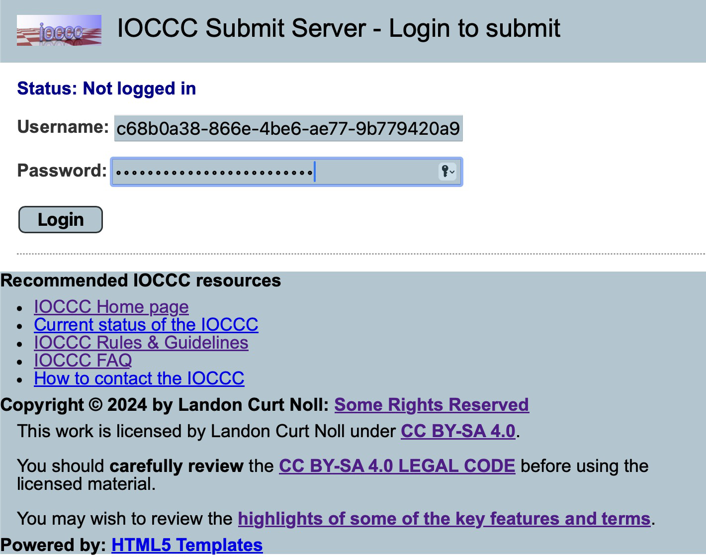
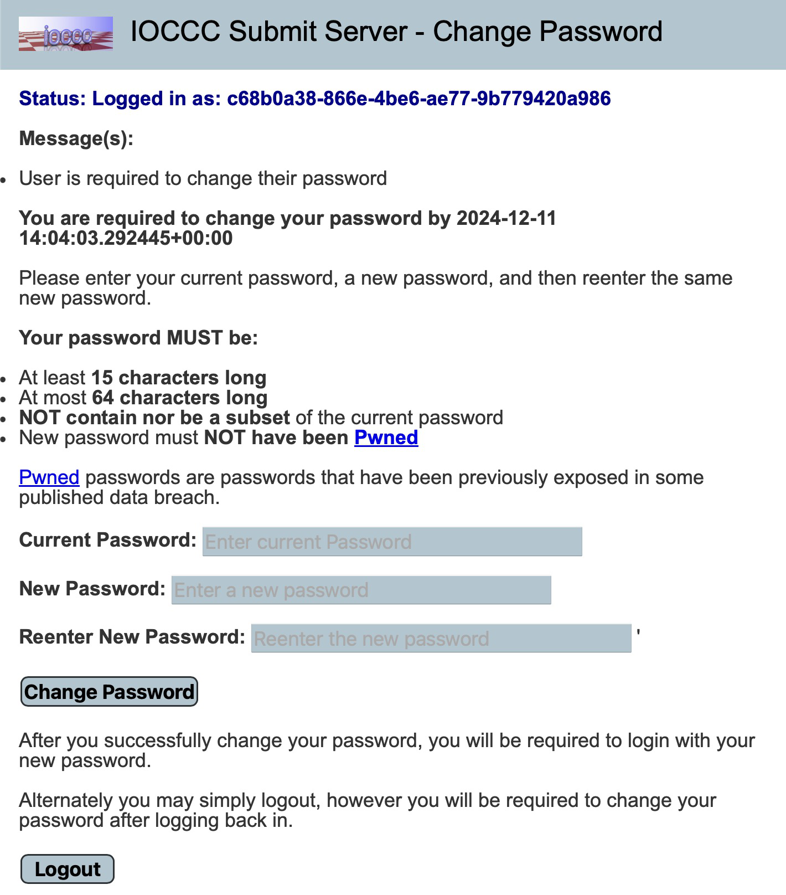
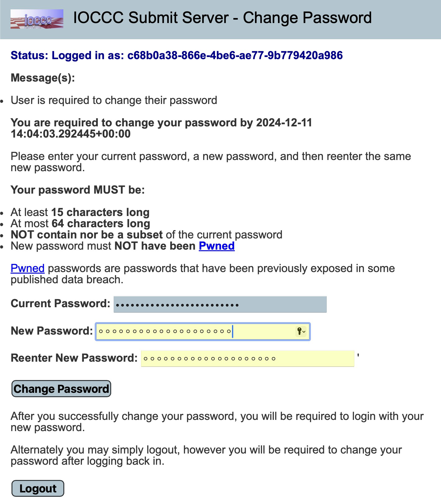
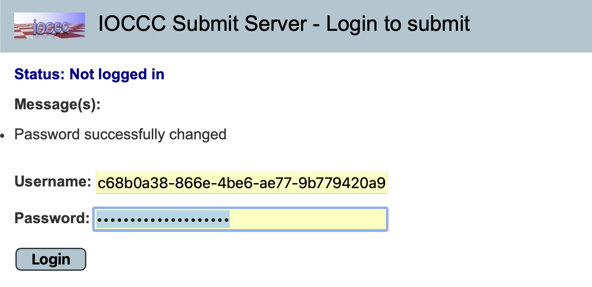
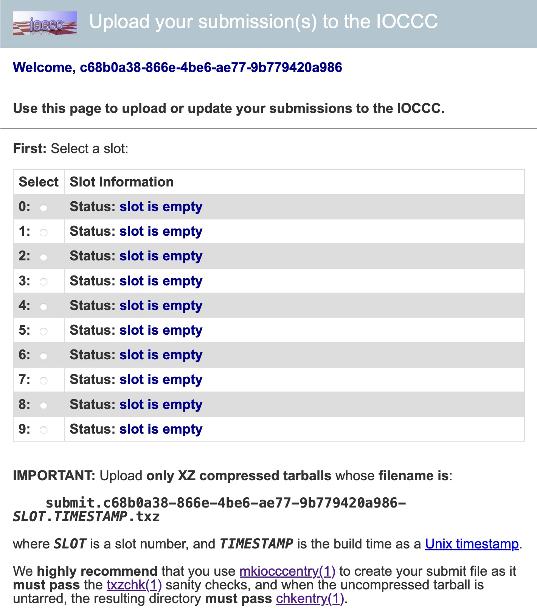
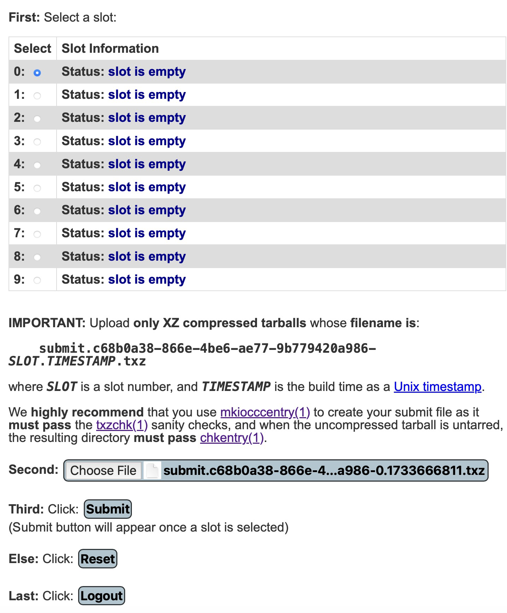
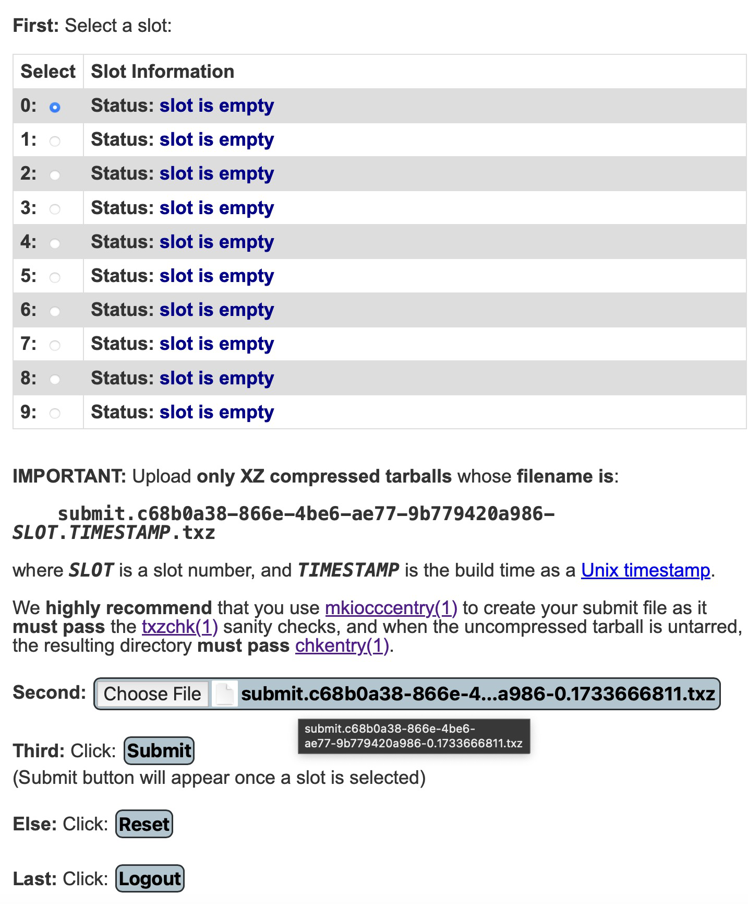
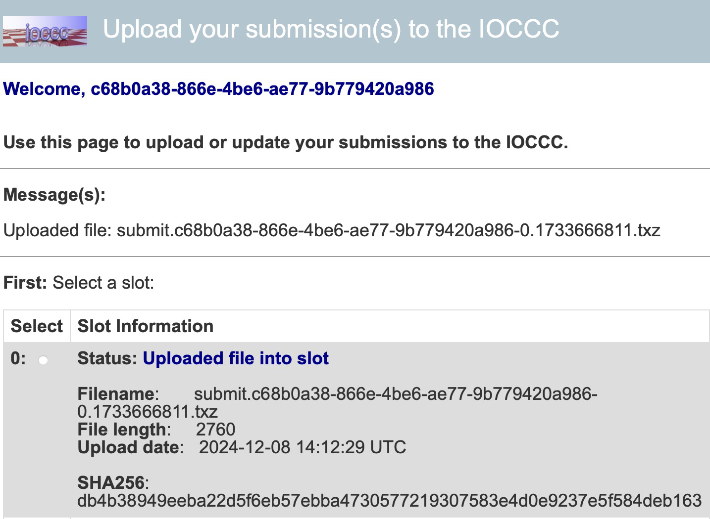

IOCCC FAQ Table of Contents
This is FAQ version 28.1.8 2024-12-07.
0. Entering the IOCCC: the bare minimum you need to know
- Q 0.0: How can I enter the IOCCC?
- Q 0.1: What is the
mkiocccentrytool, how do I obtain it and how do I use it?- Q 0.1.1: What is
mkiocccentry(1)in simple terms? - Q 0.1.2: How do I obtain the latest mkiocccentry toolkit?
- Q 0.1.3: How do I compile the mkiocccentry toolkit?
- Q 0.1.4: How do I use mkiocccentry?
- Q 0.1.1: What is
- Q 0.2: What platform should I assume for my submission?
- Q 0.3: What should I put in my submission Makefile?
- Q 0.4: What should I put in the remarks.md file of my submission?
- Q 0.5: What should I do with the
try.shandtry.alt.shscripts?
1. Entering the IOCCC: more help and details
- Q 1.0: How can I avoid reentering the information to mkiocccentry?
- Q 1.1: May I use a different source or compiled filename than prog.c or prog?
- Q 1.2: What is markdown and how does the IOCCC use it?
- Q 1.3: How do I report bugs in an
mkiocccentrytool?
2. IOCCC Judging process
- Q 2.0: What is the best way to ask a question about the IOCCC rules, guideline and tools?
- Q 2.1: How can I comment or make a suggestion on IOCCC rules, guidelines and tools?
- Q 2.2: Are there any compiler warnings that I should not worry about in my submissions?
- Q 2.3: What types of entries have been frequently submitted to the IOCCC?
- Q 2.4: How did an entry that breaks the size rule 2 win the IOCCC?
- Q 2.5: How many submissions do the judges receive for a given IOCCC?
- Q 2.6: How much time does it take to judge the contest?
- Q 2.7: How many judging rounds do you have?
- Q 2.8: Why do some IOCCC entries receive the Grand Prize or Best of Show award?
- Q 2.9: How are winning IOCCC entries announced?
- Q 2.10: Why don’t you publish submissions that do not win?
3. The mkiocccentry toolkit: finer details
- Q 3.0: What sort of checks does the mkiocccentry tool perform?
- Q 3.1: How can I validate my submission tarball?
- Q 3.2: What is the
fnamchktool? - Q 3.3: How can I validate my
.auth.jsonand/or.info.jsonfiles? - Q 3.4: What is a
.auth.jsonfile? - Q 3.5: What is a
.info.jsonfile? - Q 3.6: What is an
author handle? - Q 3.7: What is an
author_handle.jsonfile and how are they used? - Q 3.8: How can I find my author handle?
- Q 3.9: What is an
entry_id? - Q 3.10: What is a
.entry.jsonfile and how is it used? - Q 3.11: How can I validate any JSON document?
4. Compiling IOCCC entries
- Q 4.0: What Makefile rules are available to build or clean up IOCCC entries?
- Q 4.1: What form of make(1) is supported by IOCCC?
5. Dependencies for some IOCCC entries
- Q 5.0: How do I compile and run an IOCCC entry that requires X11?
- Q 5.1: How do I compile and install SDL1 or SDL2 for entries that require it?
- Q 5.2: How do I compile and install (n)curses for entries that require it?
- Q 5.3: How do I compile and run an IOCCC entry that requires sound?
- Q 5.4: How do I compile and install tcpserver for entries that require it?
- Q 5.5: How do I compile and install netpbm for entries that require it?
- Q 5.6: How do I compile and install libjpeg-turbo for entries that require it?
- Q 5.7: How do I compile and install ImageMagick for entries that require it?
- Q 5.8: How do I compile and install OpenGL for entries that require it?
- Q 5.9: How do I compile and install zlib for IOCCC entries that require it?
- Q 5.10: How do I install Ruby for entries that require it?
- Q 5.11: How do I install rake for entries that require it?
6. Problems compiling IOCCC entries
- Q 6.0: Why don’t certain IOCCC entries compile and/or run?
- Q 6.2: Why do Makefiles use -Weverything with clang?
7. Running IOCCC entries
- Q 7.0: What are
try.shandtry.alt.shscripts and why should I use them? - Q 7.1: An IOCCC entry messed up my terminal application, how do I fix this?
- Q 7.2: Why does an IOCCC entry fail to compile and/or run?
- Q 7.3: How do I find out how to send interrupt/EOF etc. for entries that require it?
- Q 7.4: How do I download individual winning entries or all winning entries of a given year?
8. Changes made to IOCCC entries
- Q 8.0: What was changed in some IOCCC entries?
- Q 8.0.1: How can I see the extended details of what was changed?
- Q 8.1: Why were some calls to the libc function gets(3) changed to use fgets(3)?
- Q 8.2: Why do some remarks seem inconsistent with the entry?
- Q 8.3: What is the meaning of the file ending in .orig.c in IOCCC entries?
- Q 8.4: What are alternate versions and why were they added to some entries?
- Q 8.5: Why was arg count and/or type changed in main() in some older entries?
- Q 8.6: Why were files added to, removed from or changed in some entries?
- Q 8.7: What is the original source file?
- Q 8.8: Why were some filenames changed?
9. Helping the IOCCC
- Q 9.0: How can I help the IOCCC?
- Q 9.1: Is there a list of known bugs and (mis)features of IOCCC entries?
- Q 9.2: How can I submit a fix to an IOCCC entry?
- Q 9.3: How do I make a pull request to the GitHub repo?
- Q 9.4: How can I report an IOCCC website problem?
- Q 9.5: How can I submit a fix to the IOCCC website?
- Q 9.6: How can I correct or update an IOCCC author’s information?
- Q 9.7: What should I do if I find a broken or wrong web link?
- Q 9.8: How can I support the IOCCC?
- Q 9.9: I deobfuscated some entry code, may I contribute the source?
- Q 9.10: How do I report a bug in an IOCCC entry?
10. Miscellaneous IOCCC
- Q 10.0: May I mirror the IOCCC website?
- Q 10.1: May I use IOCCC content in an article, book, newsletter, or instructional material?
- Q 10.2: Why do you sometimes use the first person plural?
- Q 10.3: What is the purpose of the
.top,.allyear,.yearand.pathfiles? - Q 10.4: What is the current meaning of the IOCCC terms Author, Entry, and Submission?
- Q 10.5: Am I allowed to use IOCCC content?
- Q 10.6: What is Mastodon and why does IOCCC use it?
- Q 10.7: How do I set certain tabstops for viewing source code in vi(m)?
- Q 10.8: How do the menus on the website work and what can I do if they don’t work?
- Q 10.9: How do I find more information about a winning author of an entry?
- Q 10.10: What is this cb tool that is mentioned in the IOCCC?
11. History of the IOCCC
- Q 11.0: How did the IOCCC get started?
- Q 11.1: Why are some years missing IOCCC entries?
- Q 11.2: What is the history of the IOCCC website?
- Q 11.3: How has the IOCCC size limit rule changed over the years?
- Q 11.4: What is the Great Fork Merge?
- Q 11.5: What is an IOCCC BOF?
- Q 11.6: I do not understand the IOCCC, can you explain it to me?
Jump to: top
The IOCCC FAQ
Section 0: Entering the IOCCC: the bare minimum you need to know
Jump to: top
Q 0.0: How can I enter the IOCCC?
To submit your code to the IOCCC, you MUST follow these steps:
0. Verify that the IOCCC is open for submissions
Check the current status of the IOCCC see of the IOCCC is open.
You may only register for the IOCCC when the IOCCC is OPEN.
You may only submit your entries to the IOCCC when the IOCCC is OPEN.
See also the IOCCC news for more information.
1. Read the latest IOCCC rules and review the IOCCC guidelines
Please pay close attention to the official IOCCC rules.
You are also highly encouraged to review the official IOCCC guidelines as they contain important suggestions, useful hints, and IOCCC humor. :-)
2. Register for the IOCCC
The IOCCC registration procedure is still being designed. As such, we do not yet have instructions on how to use the IOCCC registration procedure. Once IOCCC registration procedure is ready, we will update this section with the proper instructions. Watch the IOCCC news for an announcement about the IOCCC registration procedure.
Once you have been registered, you will receive an email message for how to prepare your entries for submission, and how to upload the compressed tarballs to our submission portal.
3. Obtain and compile the latest mkiocccentry toolkit
You MUST use the most recent version of the mkiocccentry toolkit. To help
you, please see the
FAQ on “how to obtain the most recent mkiocccentry”
and the
FAQ on “compiling mkiocccentry toolkit”,
for more details.
4. Run the mkiocccentry tool to form your submission tarball
For more details on mkiocccentry, what it is, how to obtain it and how to use
it, see the
FAQ on “mkiocccentry”
(especially the
FAQ on “what mkiocccentry is in simple terms,
the
FAQ on”how to use mkiocccentry“)
and the mkiocccentry section in the
guidelines.
mkiocccentry work_dir prog.c Makefile remarks.md [file ...]where:
work_dirdirectory where the entry directory and tarball are formed
prog.cpath to the C source for your entry
MakefileMakefile to build (make all) and cleanup (make clean & make clobber)
remarks.mdRemarks about your entry in markdown format: see the FAQ on “remarks.md” for more info.
[file …]
Optional extra data files to include with your entry
NOTE: Please see our IOCCC markdown guide for important information on using markdown in the IOCCC.
NOTE: It is NOT necessary to install the tools to use them as you can run
the tools from the top of the mkiocccentry repo directory just fine, though
you’ll have to use the form of ./mkiocccentry instead of just mkiocccentry.
However, installing it will make it easier for you as you can run it from your
submission’s directory. See the
FAQ on “installing
mkiocccentry”
at the mkiocccentry repo.
If the mkiocccentry tool indicates that there is a problem with your entry,
especially if it identifies a Rule 2, or any other
rule, related problem, you are strongly encouraged to revise and correct
your entry and then re-run the mkiocccentry tool.
If you choose to risk violating rules, be sure and explain your reason
for doing so in your remarks.md file.
See also Rule 17!
5. Upload your entry to the IOCCC submit server
The following steps should be taken, in order to upload your mkiocccentry xz
compressed tarball, to change the file (if you need to upload a different file
or you have updated the submission), and to check the status of it after the
contest closes:
First, open the web page in your browser. It should look like this: With the login id and password already input, It should look something like this:

The login is the UUID you were provided when you registered for the IOCCC and the password is the initial password you were provided with. Click “Login”. Assuming everything is fine, it should look something like:

As you can see, you have to change your password. Put in your login (UUID username), your old (initial) password and a new password. For instance:

Click “Change Password”.
Once this is done, you will have to log in again. Using the UUID login and the new password:

.. click “Login”.
Once you’ve logged in, you will see submit slots. Each slot is for one submission so if you update a submission, make sure you choose the right one so you do not overwrite the wrong one!
Here is what it looks like without any uploads and no slot selected:

Select a slot and then select a file by clicking the button “Choose File”. After doing this, it should look something like:

If you need to change the file to upload, you can mouseover the file and click it. If you wait a moment it’ll show the current filename. It will look something like this:

Once you’re certain you have selected the correct file, click “Submit”, below the file selection step.
When it’s uploaded it should look something like this:

Here you see the details, in particular:
- the status of the submission
- the filename, which will be in the correct format, assuming you used
mkiocccentry(1)which is HIGHLY recommended so that you do not break Rule 17! - the file length, which
txzchk(1)will also verify (the file itself and the tarball listing) - the upload date
- the SHA256 hash of the file
Now if you’re done, log out.
After the submission deadline is reached, you can log in to check the status of
your submissions. Here is what it will look like when the judges have verified
that your tarball / submission has been validated (NOT judged), by txzchk(1)
and chkentry(1).:

For details on txzchk, see the
FAQ on “txzchk”.
For details on chkentry, see the
FAQ on “chkentry”.
If you need more information on what chkentry checks, see the
FAQ on the “.info.json file”
and the
FAQ on the “.auth.json file”.
Jump to: top
Q 0.1: What is the mkiocccentry tool, how do I obtain it and how do I use it?
mkiocccentry repo
This toolkit is from the mkiocccentry repo and it is required that you use it to package your submission. Not doing so puts you at a great risk of violating the Rules and in particular Rule 17.
Jump to: top
Q 0.1.1: What is mkiocccentry in simple terms?
The mkiocccentry tool first gathers your source
code, your Makefile, your remarks, any other data files you wish to provide (up
to a maximum, including the mandatory files, defined in
limit_ioccc.h
as MAX_FILE_COUNT) and other information about your submission,
information about the author (or authors), and then runs a lot of tests before (if
all is OK) forming your tarball. After this is done it will additionally run the
txzchk(1) tool (which runs the fnamchk(1) tool) on the submission tarball.
The tool chkentry(1) will also be run, before creating the tarball. See the
FAQ on “txzchk”,
the
FAQ on “fnamchk”
and the
FAQ on “chkentry”
for more information on these important tools, if you want more information.
See the FAQ on “submitting to the IOCCC” for details on how to register for the IOCCC, the FAQ on “obtaining the latest mkiocccentry toolkit” for details on obtaining the latest release, the FAQ on “compiling the mkiocccentry toolkit” for details on compiling and the FAQ on “using mkiocccentry” for more details.
Jump to: top
Q 0.1.2: How do I obtain the latest mkiocccentry toolkit?
Before you use it, make SURE you have the most recent version. If you do not have an mkiocccentry tool directory:
cd some_directory
git clone git@github.com:ioccc-src/mkiocccentry.git
cd mkiocccentryIf you already have an mkiocccentry tool directory:
cd mkiocccentry
git fetch
git rebaseJump to: top
Q 0.1.3: How do I compile the mkiocccentry toolkit?
Once you’ve obtained the LATEST version (see the
FAQ on “obtaining the latest mkiocccentry toolkit”
to make sure of this), change to the mkiocccentry directory and then run:
make clobber allto compile all the tools.
Jump to: top
Q 0.1.4: How do I use mkiocccentry?
Once you have registered, you will need to package your entry with the
mkiocccentry tool. If you have not already obtained the toolkit, see the
FAQ on “obtaining the mkiocccentry toolkit”
and the
FAQ on “compiling mkiocccentry”
if you have not already done so.
The below details discuss this very important tool. As it is complicated we will explain how to use this tool. If you want to know what it is in simpler terms, see the FAQ on “what mkiocccentry is”.
As the Guidelines state, the synopsis is:
mkiocccentry [options] work_dir prog.c \
Makefile remarks.md [file ...]… where work_dir is a directory that will be used to build the submission
tarball, prog.c is your submission source code, Makefile is your submission’s
Makefile, remarks.md are your remarks (that will be the basis of the
README.md file which will be used to form the index.html file, if your
submission wins) and the remaining args are the paths to any other files you
wish to submit.
The work_dir MUST already exist, as a directory, and it is an error if it
is not a directory that can be written to. In this directory your submission
directory will be created, with the name based on your IOCCC registration
username, which is in the form of a UUID, and submission number; see the
rules for more details on this, and in particular Rule
17.
If the subdirectory in the work directory already exists, you will have to
move it, remove it or otherwise specify a different work directory (NOT the
subdirectory), as it needs to be empty and the mkiocccentry(1) tool does not
check this for you as it could not do anything about anyway.
This subdirectory is where your files will be copied to. Your submission
tarball (which you will upload to the submit server) that txzchk(1) will
validate will be placed in the work directory, and its contents will
be the subdirectory with your submission’s files.
The mkiocccentry(1) tool will ask you for information about your
submission as well as author details (that will only be looked at if the
submission wins), run some tests and run a number of other tools, as briefly
mentioned, and as described in the
“finer details” section.
See also the mkiocccentry repo FAQ for more up to date information on downloading, compiling, and related FAQ information.
Jump to: top
Q 0.2: What platform should I assume for my submission?
Your entry must compile with clang or gcc and run under at least one flavor of a UNIX system that conforms to the SUS, otherwise known as the The Single UNIX Specification Version 4 or later SUS.
Jump to: top
Q 0.3: What should I put in my submission Makefile?
We recommend starting with the sample
Makefile
(renamed as Makefile of course) as a starting point for your
entry’s Makefile:
The Makefile is a file used by the make(1) command that contains
rules and UNIX shell-style commands.
The first and default rule should be the all rule and should build your
entry’s executable file. There are other rules that should be present in your
Makefile, and which mkiocccentry attempts to find; see below.
If your entry depends on a particular source file name during compilation or execution,
your Makefile should copy prog.c into the desired filename. See the
FAQ on “source and compiled filenames”
for an example.
If you are not familiar Makefiles, you might consider the following tutorials:
For the make(1) connoisseur: As of 2023, IOCCC judges use GNU
make compatible make(1)
command that is compatible with GNU Make version 3.81. Your Makefile should be
compatible with this; see the
FAQ on “Makefile compatibility”
for more details and help.
Expected make rules:
The following rules should exist in your Makefile:
all- This rule should be the first rule and it should compile your submission.
clean- This rule should remove any intermediate build files, for example
.ofiles or other intermediate build files. It should NOT remove compiled programs (seeclobberbelow).
- This rule should remove any intermediate build files, for example
clobber- This rule should restore the original state of the submission’s directory.
It should depend on the
cleanrule and it should remove the compiled program(s), clean up any files made by the program etc.
- This rule should restore the original state of the submission’s directory.
It should depend on the
try- run the program in a way you suggest. If you use the
try.shscript system, which we do like, you can have this rule invoke the script (./try.sh). See the FAQ on the “try.sh scripts system” for more details.
- run the program in a way you suggest. If you use the
Although the mkiocccentry(1) tool only checks for those rules, the most up to
date
Makefile.example
does have other rules like everything and alt, and we encourage you to use
the one linked to above.
Jump to: top
Q 0.4: What should I put in the remarks.md file of my submission?
First, PLEASE read the IOCCC markdown guidelines.
Next, while you may put in as much or as little as you wish into your entry’s
remarks.md file, we do have few important suggestions:
We recommend that you explain how to use your entry. Explain the command line (if any command line options and arguments are used) and any input or actions if applicable.
We highly recommend that you explain why you think your entry is well obfuscated.
For those entries that win the IOCCC, we often use much of text from the
remarks.md file in the Author’s remarks section of the index.html file.
For this reason, a well written remarks.md file is considered a plus.
While not required, consider adding bit of humor to your remarks.md
as most people who are not humor impaired, as well as the IOCCC judges
appreciate the opportunity for a fun read as well as a chuckle or two.
What helps:
- explaining what your entry does
- how to entice it to do what it is supposed to do
- what obfuscations are used
- what are the limitations of your entry in respect of portability and/or input data
- how it works (if you are really condescending)
What does not help:
- admitting that your entry is not very obfuscated (you see, the contest is called the IOCCC, not the INVOCCC :-) ); but even if you do not admit it, not very obfuscated entries have a minuscule chance to win (although 2000/tomx is a notable counterexample).
- mentioning your name or any identifying information in the remark section (or in the C code for that matter) - we like to be unbiased during the judging rounds; we look at the author name only if an entry wins. See the guidelines if this is not clear!
- leaving the remark section empty.
Jump to: top
Q 0.5 What should I do with the try.sh and try.alt.sh scripts?
If your submission has more than one use, or if you have interesting ways to
invoke your program, perhaps using other commonly installed tools (or tools
included in your submission), it can be helpful to include a try.sh script:
The template try.sh script can be used as a starting point, or you can look at
some of the others in past winning entries, to get some ideas.
It is not detrimental to your chances of winning if you do not include one as
not all submissions can make use of them. Nevertheless, it is helpful to include
ways to use your program and as submitted Makefiles should have a try rule, if
you have creative ways this can be a bonus. It does not mean that a program that
cannot be used with other programs is less interesting or less likely to win,
but we do enjoy interesting and creative uses of submissions.
If you have alternate code that you are including, then you can use the
try.alt.sh template as well.
We recommend that you include the use of these scripts in the try rule in the
example Makefile that you modify for your submission. See the
FAQ on “submission Makefiles.
Jump to: top
Section 1: Entering the IOCCC: more help and details
Jump to: top
Q 1.0: How can I avoid reentering the information to mkiocccentry?
mkiocccentry(1) has some options to help write OR read from an
answers file so you do not have to input the author(s) or the submission
details (like the abstract, summary etc.), just to change a file.
To write to answers.txt try:
mkiocccentry -a answers.txt ...Alternatively, if you wish to overwrite a file, you can use the -A
flag with the same option argument. Be very careful that you do not accidentally
overwrite your prog.c or some other important file!
To make use of the answers file, use the -i answers option like:
mkiocccentry -i answers.txt ...Jump to: top
Q 1.1: May I use a different source or compiled filename than prog.c or prog?
While your submission’s source filename, as submitted, must be prog.c, your entry’s Makefile
may copy prog.c to a different filename as part of the compiling/building process. For example:
# Makefile continues above ...
all: desired_name
desired_name: desired_name.c
rm -f $@
cc desired_name.c -o $@
desired_name.c: prog.c
rm -f $@
cp -f prog.c $@
clean:
rm -f desired_name.o
clobber: clean
rm -f desired_name.c desired_name
# Makefile continues below ...We recommend that the make clobber rule remove files that your entry
creates as part of the compiling/building process.
You may also copy the compiled prog into a different file as part of compiling process.
For example:
# Makefile continues above ...
all: desired_name
different_name: prog
rm -f $@
cp -f prog $@
clean:
rm -f prog.o
clobber: clean
rm -f desired_name
# Makefile continues below ...Jump to: top
Q 1.2: What is markdown and how does the IOCCC use it?
The IOCCC makes extensive use of markdown.
For example, when submitting to the IOCCC, we have people
submit remarks about entry in markdown format. Every
winning IOCCC entry uses a README.md markdown file
as the basis for forming the index.html web page for that entry.
All generated HTML pages on the Official IOCCC website
start with some markdown content.
IMPORTANT: Please read the IOCCC markdown guidelines as it lists things you should NOT use in markdown files and things you should do as well.
See the markdown syntax guide. See also CommonMark Spec.
Jump to: top
Q 1.3: How do I report bugs in an mkiocccentry tool?
As the mkiocccentry toolkit is crucial in the contest, both for submitters and the judges, if you find a bug (or you think you find a bug) we would be grateful if you were to report it at the mkiocccentry issues page.
Please see the FAQ on “reporting bugs and other issues in the mkiocccentry repo” in the mkiocccentry repo for more thorough details on bug reporting.
Jump to: top
Section 2: IOCCC Judging process
Jump to: top
Q 2.0: What is the best way to ask a question about the IOCCC rules, guideline and tools?
We realise that the IOCCC rules, IOCCC guidelines and the IOCCC mkiocccentry tools can be confusing or even seem overwhelming to some people.
The IOCCC judges do welcome questions about the IOCCC and will be happy to help.
Chances are, if you have a question, there are a number of other people who have similar questions. So we recommend that you first view the GitHub discussions for this repo to see if someone else asked it already. Feel free to join in on such a discussion, even if to just say:
I have this question too.
Feel free to provide additional feedback in the existing discussion as needed.
BTW: If your question is just about the IOCCC mkiocccentry tools, please view the mkiocccentry repo discussions instead.
If you do not find a suitable open discussion, please consider opening a new IOCCC winner repo discussion with your question. Doing this may be of help to others with a question similar to yours.
BTW: If your question is just about the IOCCC mkiocccentry tools, and you do not see a suitable open discussion over there, then please consider opening a new mkiocccentry discussion over there.
If you do not feel, for some reason, comfortable asking your question in public (although we hope you consider asking it in public for the benefit of others), then use the How to contact the IOCCC information to ask a private question.
IMPORTANT: When you ask your question (in public or as a private question) PLEASE try to NOT discuss detailed information about any pending submission. Try to ask for question in a more generic way as this will help others with a similar question and this will not give away what you might be doing with your submission. If the IOCCC judges truly need more information, they will ask (either in public or suggest a private conversation).
Again, please don’t hesitate to ask: Your question may be something that others are wondering about as well!
See also the FAQ on “rules, guidelines, tools feedback”.
Jump to: top
The IOCCC judges to welcome feedback on the IOCCC rules, IOCCC guidelines and on the IOCCC mkiocccentry tools.
To comment on the IOCCC rules or the IOCCC guidelines please view the GitHub discussions for this repo. If there is an on-going discussion that seems relevant to what you have to say, consider adding comments to that particular discussion. Otherwise consider opening a new IOCCC repo discussion.
To comment on IOCCC mkiocccentry tools, please view the mkiocccentry repo discussions. If there is an on-going discussion that seems relevant to what you have to say, consider adding comments to that particular discussion. Otherwise consider opening a new mkiocccentry discussion.
Jump to: top
Q 2.2: Are there any compiler warnings that I should not worry about in my submissions?
There are unfortunately some warnings that cannot be disabled; they are always
enabled whatever warning options you have enabled. Also, there is a warning that
is enabled whenever you act on char *s, saying it is unsafe buffer usage, even
when it’s not. This might be enabled by -Weverything but it might not be; for
more details on why we use -Weverything in Clang see the
FAQ on “-Weverything”.
It is not detrimental to your submission if you disable this, which you can do
by specifying -Wno-unsafe-buffer-usage.
So in short, no you should not worry about these as they are sometimes inevitable in obfuscated code and even non-obfuscated code.
If you can work past this it might be good but this is not something that should be worried about too much as this is on the compiler developers, not you.
Jump to: top
Q 2.3: What types of entries have been frequently submitted to the IOCCC?
There are types of entries that are frequently submitted to the IOCCC. While we do not wish to prevent people from sending a submission to the IOCCC on a frequently submitted theme, we do wish to provide a fair warning to those who do.
Fair warnings on frequently submitted themes:
IMPORTANT HINT: It is not fatal to send in those types of entries, it is just HARDER to win with such a submission. A submission on a frequently submitted theme will have to do something in a really unique AND interesting way to even make it into the final judging rounds. It will have to compete with previous IOCCC winners based on the same theme.
IMPORTANT HINT: If you really wish send in a submission on a frequently submitted theme, be sure that it is obfuscated in several new and novel ways.
IMPORTANT HINT: Be sure to clearly explain near the beginning
of your remarks.md file, see the
FAQ on “remarks.md”,
why you are submitting an entry based on a frequently
submitted theme and how compares with previous IOCCC winners
of the same theme.
Examples of frequently submitted themes
Maze generator
Tic-Tac-Toe/Noughts and Crosses/Xs and Os game
Solitaire/Othello game
Generating small primes (below is the list of all prime related winning entries)
Self-reproducing program
- 1990/scjones
- 1994/smr - do not claim your program is the smallest without seeing this entry!
- 2000/dhyang - this entry set a high bar for entries of this theme
Entries that just print “Hello, world!”
Entries that use some complex state machine/table to print something
ROT13
pi or e computation
The above list of frequently submitted themes is not exhaustive
Some final thoughts on frequently used themes
While it is possible to win a new IOCCC with one of these frequently submitted types of entries, level of the competition from previous IOCCC entries make it more challenging to be successful.
It is also important to note that the guidelines often state something along the lines of:
We tend to dislike programs that: are similar to previous winning entries.
FAIR WARNING: Be sure to clearly explain near the beginning
of your remarks.md file, see the
FAQ on “remarks.md”,
why you are submitting an entry based on a frequently
submitted theme and how compares with previous IOCCC winners
of the same theme.
Jump to: top
Q 2.4: How did an entry that breaks the size rule 2 win the IOCCC?
As entries have been fixed it is entirely possible that some of the entries no longer fit within the year’s size restrictions. Invariably the length of columns and/or number of rows have also changed.
The winner.orig.c file contains the original source code that was
subjected to rule 2 of the given IOCCC. You may also wish to see
the archive directory where you can find all the
original winning entries as compressed tar files for a given year.
In some cases the entry may have abused rule 2 and declared an “abuse of the rules” (although now blatant abuse of the rules to get around rule 2 size limits is discouraged).
Jump to: top
Q 2.5: How many submissions do the judges receive for a given IOCCC?
By tradition, we do not say.
Jump to: top
Q 2.6: How much time does it take to judge the contest?
It takes a fair amount of time to setup, run, respond to messages, process entries, review entries, trim down the set entries to a set of winning entries, doing the write-up of the entries, announcing the entries, reviewing final edits of the winning entry set, posting the winning entries, being flamed :-), tell folks who send in late entries to wait until the next contest, etc… It takes a few weekends and a number nights of study and work … which is hard given that we are busy with many other activities as well.
Note that we do not contact the author if an entry does not compile or does not work as advertised; we might attempt to fix obvious compilation problems or incompatibilities, but no more than that - so be sure that your entry does work on at least a couple different platforms, at least one of them being UNIX or SUS-conforming. See the FAQ on “SUS” for more information.
Jump to: top
Q 2.7: How many judging rounds do you have?
Are you trying to trick us? :-)
By tradition, we do not say how many judging rounds we have in a given IOCCC.
We often report when the IOCCC judges start the 1st round, and then usually report when the IOCCC judges start near final judging rounds, and sometimes we also report when we enter what we believe is the final judging round, so you may guess that we have at least 3 rounds. :-) The actual number of rounds is certainly more than 3.
Jump to: top
Q 2.8: Why do some IOCCC entries receive the Grand Prize or Best of Show award?
In some years, the IOCCC judges discover a truly amazing IOCCC entry that
stands out among all of the other IOCCC entries received that year.
For such an IOCCC entry, the IOCCC judges award a “Grand Prize”
or “Best of Show award”.
In 1984-1987, the “Grand Prize” winning entries are:
Starting from 1988, the entry we liked the most in that year is called
“Best of Show”. Here are the “Best of Show” entries:
- 1988/applin
- 1989/jar.2
- 1990/theorem
- 1991/brnstnd
- 1992/vern
- 1996/august
- 1998/banks
- 2000/jarijyrki
- 2020/carlini
In 1993, 1994 and 1995 the judges were unable to select a clear overall winning entry. So to give a nod to the entry that had the highest approval ranking from the judges, they used the following awards:
- 1993/rince -
Most Well Rounded - 1994/shapiro -
Most Well Rounded - 1995/leo -
Best Use of Obfuscation
These could be considered the ‘best entry’ for those years with 1 or
more other entries that came in close behind.
Jump to: top
Q 2.9: How are winning IOCCC entries announced?
Once the IOCCC closes, the judges will:
Judge the submissions.
Select the winning entries and announce them on the @IOCCC mastodon feed.
Notify the authors of entries that won the IOCCC via email using their previously registered email address.
Announce who are authors of this year’s winning IOCCC entries via the @IOCCC mastodon feed.
Upload the winning code to the Official IOCCC winner repo.
Update the Official IOCCC website, and in particular display this year’s winning IOCCC entries at the top of the IOCCC winning entries page. This is done by updating this repo.
Update the IOCCC news page, also by updating this repo.
Jump to: top
Q 2.10: Why don’t you publish submissions that do not win?
Because the publication on the IOCCC site IS the award! Anyone is free to put their IOCCC hopefuls, lookalikes and/or entries that do not win on their web page for everyone to see.
Jump to: top
Section 3: The mkiocccentry toolkit: finer details
Q 3.0: What sort of checks does the mkiocccentry tool perform?
mkiocccentry(1) will check and warn about the following conditions:
- If the files do not exist, are not regular files or cannot be read.
- If
prog.cviolates Rule 2 (see iocccsize.c). - If
prog.cis empty. - If
prog.chas any high bit char (see iocccsize.c). - If
prog.chas any NUL char (see iocccsize.c). - If
prog.chas any unknown or invalid trigraph (see iocccsize.c). - If
prog.ctriggers a word buffer overflow (see iocccsize.c). - If
prog.ctriggers anungetc(3)error (see iocccsize.c). - If the first rule in the
Makefileis notall. - If the
Makefiledoes not have acleanrule. - If the
Makefiledoes not have aclobberrule. - If the
Makefiledoes not have atryrule. - If the
remarks.mdis empty.
Conditions that one must correct, and which mkiocccentry(1) will prompt until
they are correct, are:
- Your title is not in the range of 1 through
MAX_TITLE_LENchars (see limit_ioccc.h). - Your title does not match the regexp
^[0-9a-z][0-9a-z._+-]*$. - Your abstract is not between 1 and
MAX_ABSTRACT_LENchars (see limit_ioccc.h). - the author count is not 1 through
MAX_AUTHORS(see limit_ioccc.h). - An author name is not 1 through
MAX_NAME_LENchars (see limit_ioccc.h). - Duplicate author name.
- Country code is invalid (not ISO 3166-1 2 character codes).
- An email, if provided, is not in the format of
x@yor ifxorycontain a@, are empty or if the total length is longer thanMAX_EMAIL_LEN(see limit_ioccc.h). - A URL or alt URL, if provided, does not start with
http://orhttps://or is longer thanMAX_URL_LENchars (see limit_ioccc.h) or does not have anything after thehttp://orhttps://. - A mastodon handle, if provided, is not in the form of
@user@site(i.e. starts with an@, has text following it and then another@followed by more text and has no other@) or is longer thanMAX_MASTODON_LEN(see limit_ioccc.h). - A GitHub account, if provided, does not start with an
@, has more than one@or is longer thanMAX_GITHUB_LEN(see limit_ioccc.h). - An affiliation, if provided, is longer than
MAX_AFFILIATION_LEN(see limit_ioccc.h). - An author handle, if the default is not accepted, does
not match the regexp
^[0-9A-Za-z][0-9A-Za-z._+-]*$. - An author handle is repeated.
- The output of
lson the submission directory is incorrect.
Although the mkiocccentry(1) tool will verify everything for you, you may wish
to validate different parts individually with the different tools. As the
rules state, each of these tools has a -h option.
See the
FAQ on “jparse”,
the
FAQ on “.auth.json”,
the
FAQ on “.info.json”,
the
FAQ on “chkentry”,
the
FAQ on “txzchk”
and the
FAQ on “fnamchk”
for more details on the tools that mkiocccentry either executes directly or
indirectly as part of the packaging process, especially if you wish to run one
or more of these tools manually.
See also the Guidelines and the Rules (and in particular Rule 17).
Jump to: top
Q 3.1: How can I validate my submission tarball?
The tool that validates submission tarballs can be obtained from the IOCCC
mkiocccentry repo. The
mkiocccentry tool itself will run the validator after forming the tarball.
However, you may wish to manually validate the tarball. The tool that does this
is txzchk.
If you wish to validate the tarball without running the mkiocccentry(1) tool,
for instance the tarball
submit.12345678-1234-4321-abcd-1234567890ab-2.1720636351.txz you can, after
installing the tools, do:
txzchk submit.12345678-1234-4321-abcd-1234567890ab-2.1720636351.txzAssuming that the tarball exists and is valid, you should see no output.
If you wish to see the contents, for instance like mkiocccentry(1) does, you
could do:
txzchk -v 1 submit.12345678-1234-4321-abcd-1234567890ab-2.1720636351.txzAs the guidelines state, it is beyond the scope
of this document to discuss the many tests that txzchk(1) runs; if you must
know we refer you to the source
code.
Jump to: top
Q 3.2: What is the fnamchk tool?
This tool, which is in the mkiocccentry repo, validates the directory name of your submission.
Rather than mkiocccentry running this tool manually, txzchk’s algorithm uses
the output of this tool. If you wish to validate your tarball filename manually,
you can do so. For instance:
fnamchk submit.12345678-1234-4321-abcd-1234567890ab-2.1720636351.txzAssuming everything is OK, it would show:
12345678-1234-4321-abcd-1234567890ab-2
See also the FAQ on “validating your submission tarball” for more information.
Jump to: top
Q 3.3: How can I validate my .auth.json and/or .info.json files?
If you want to validate the .auth.json or .info.json files you
should use chkentry(1) from the mkiocccentry
repo.
The chkentry(1) tool uses the IOCCC version of the jparse
API
to perform additional checks on these two IOCCC specific JSON files. It is
possible that this version will at times differ from the official jparse
API at the
official jparse repo and this is one of the
reasons the tools’ -V (version option) show the JSON parser version as well.
See the FAQ on “.auth.json” and FAQ on “.info.json” for more details on these files.
The chkentry(1) tool accepts more than one command line form.
If you pass a single argument, it is expected to be a directory that has both
.auth.json and .info.json in it. You can also specify a .auth.json and/or
.info.json file. An argument of “.” will skip that file. For instance:
# test entry directory test_work:
chkentry test_work
# run checks on .info.json:
chkentry .info.json .
# run checks on .auth.json:
chkentry . .auth.json
# run checks on .info.json and .auth.json:
chkentry .info.json .auth.jsonIf there is a JSON issue detected by the
jparse(3) API, then there is a JSON error and
chkentry(1) will report it as an error. If the parsing is OK (i.e. valid
JSON) but there is an issue in one or both of the
JSON files in the context of the IOCCC,
it will report this as an error. Thus, if you were to package your
submission manually then you would be violating Rule
17.
Jump to: top
Q 3.4: What is a .auth.json file?
This file is constructed by the mkiocccentry(1) prior to forming the xz
compressed tarball of your submission. The .auth.json file contains
information about the author or authors of the submission, in JSON format.
In order of the file’s contents we describe each required field, below:
no_comment(double quoted string)- We can provide
no commentaboutno_commentother than to state that unlessno_commentmatches this quote:
- We can provide
“mandatory comment: because comments were removed from the original JSON spec”
your submission WILL BE rejected!
Are we suggesting that removing comments from the JSON spec was a mistake?
“You might very well think that; but of course I couldn’t possibly comment.” – Francis Urquhart
IOCCC_auth_version(double quoted string)- The current version of the
.auth.jsonfile.
NOTE: this MUST match THIS IOCCC’s
.auth.jsonversion, defined asAUTH_VERSIONin soup/version.h in the mkiocccentry repo. If this is not the case your submission WILL BE rejected!- The current version of the
IOCCC_contest(double quoted string)- Which contest number this is (e.g. 1 for 1984, 2 for 1985, 27 for 2020).
NOTE: this MUST match THIS IOCCC’s contest value, defined as
IOCCC_CONTESTin soup/limit_ioccc.h in the mkiocccentry repo. If this is not the case your submission WILL BE rejected!IOCCC_year(number)- The year this contest was run in.
NOTE: sometimes an IOCCC year runs into another year and the contest year might not match when it ends.
NOTE: this MUST match THIS IOCCC’s contest, defined as
IOCCC_YEARin soup/limit_ioccc.h in the mkiocccentry repo. If this is not the case your submission WILL BE rejected!mkiocccentry_version(double quoted string)- The version of
mkiocccentrythat formed this.auth.jsonfile.
NOTE: this MUST match THIS IOCCC’s
mkiocccentryversion, defined asMKIOCCCENTRY_VERSIONin soup/version.h in the mkiocccentry repo. If this is not the case your submission WILL BE rejected!- The version of
chkentry_version(double quoted string)- The version of
chkentrythat was used to validate this.auth.json, assuming that it was created bymkiocccentry.
NOTE: this MUST match THIS IOCCC’s
chkentryversion, defined asCHKENTRY_VERSIONin soup/version.h in the mkiocccentry repo. If this is not the case your submission WILL BE rejected!- The version of
fnamchk_version(double quoted string)- The version of
fnamchkthattxzchkuses to validate the filename of the xz compressed tarball.
NOTE: this MUST match THIS IOCCC’s
fnamchkversion in order for it to be valid. If this is not the case your submission WILL BE rejected!- The version of
IOCCC_contest_id(double quoted string)- The IOCCC contestant ID used as a username in the form of in the form of a UUID and submission number; see the Rules for more details on this, and in particular Rule 17.
NOTE: if the contest ID is NOT in this format then
fnamchkwill report it as an error and your submission WILL BE rejected for violating Rule 17!tarball(double quoted string)- The xz compressed tarball filename.
NOTE: this MUST match the actual tarball’s filename in order for this to be valid. If there is a mismatch you stand a great risk of having your submission rejected for violating Rule 17! Moreover, it is possible that
txzchkwill report a problem throughfnamchk(1)which also puts you at great risk of violating Rule 17. Iftxzchkdoes not detect this, though, it does not mean it’s a bug but rather that the directory in the tarball matches the filename.submit_slot(number)- The submission number.
NOTE: this MUST be within the range of 0 THROUGH
MAX_SUBMIT_SLOT(see soup/limit_ioccc.h in the mkiocccentry repo). If this is not the case you stand a great risk of having your submission rejected for violating Rule 17!author_count(number)- How many authors this submission has.
NOTE: this MUST be within the range of 1 THROUGH
MAX_AUTHORS(see soup/limit_ioccc.h in the mkiocccentry repo). If this is not the case you stand a great risk of having your submission rejected for violating the Rules! Moreover, if theauthor_countis inconsitent with how many authors are in theauthorsarray your submission will be invalid.test_mode(boolean)trueif thetestID was used to form the tarball, elsefalse.
NOTE: if
truethen this may NOT be submitted to the contest! Please do NOT email the Judges your submission!
Next, the JSON authors array holds the following information about the
author(s) of the submission:
name(double quoted string)- The name of this author.
location_code(double quoted string)- The location code of this author (an ISO 3166-1 2 character code). See https://en.wikipedia.org/wiki/ISO_3166-1_alpha-2#Officially_assigned_code_elements for a list of valid codes.
NOTE: in
mkiocccentryuseXXif you want your location to be anonymous.email(nullor double quoted string)- The email of this author in the form of
x@y, ornullif not provided.
- The email of this author in the form of
url(nullor double quoted string)- The primary URL of this author, or
nullif not provided.
- The primary URL of this author, or
alt_url(nullor double quoted string)- The alt URL of this author, or
nullif not provided.
- The alt URL of this author, or
mastodon(nullor double quoted string)- The Mastodon handle of this author in the form of
@user@domain, ornullif not provided. See the FAQ on “Mastodon” for more information.
- The Mastodon handle of this author in the form of
github(nullor double quoted string)- The GitHub account of this author in the form of
@user, ornullif not provided.
- The GitHub account of this author in the form of
affiliation(nullor double quoted string)- This author’s affiliation, if any, or
nullif not provided.
NOTE: if provided, the length of the affiliation MUST be within the range of 1 THROUGH
MAX_AFFILIATION_LEN(see soup/limit_ioccc.h in the mkiocccentry repo). If this is not the case you stand a great risk of having your submission rejected for violating Rule 17!NOTE: an affiliation does NOT have any affect on whether you will win or not.
- This author’s affiliation, if any, or
past_winning_author(boolean)trueif this author claims to have won a past IOCCC,falseif this author has NOT won before.
NOTE: this has NO effect on whether you will win or not.
default_handle(boolean)trueif this default handle was accepted,falseif one is provided by this author.
author_handle(double quoted string)- This author’s handle (custom or default provided).
NOTE: if you have won before, we ENCOURAGE you to use the same handle of your previous winning entries, to help in organising the authors.html page and the author JSON file. See the FAQ on “author handle” and the FAQ on “author_handle.json” for more information.
author_number(number)- This author number in the
authorsarray.
- This author number in the
After the authors array the remaining of a .auth.json file holds:
formed_timestamp(number)- Seconds since epoch when
.auth.jsonwas formed (seegettimeofday(2)). See also the FAQ on “.info.json” for more information.
NOTE: this MUST be greater than or equal to
MIN_TIMESTAMP(see soup/limit_ioccc.h in the mkiocccentry repo). If this is not the case your submission WILL BE rejected.- Seconds since epoch when
formed_timestamp_usec(number)- Microseconds since the tstamp (seconds since epoch when
.auth.jsonwas formed - seegettimeofday(2)) second.
NOTE: this MUST be within the range
MIN_FORMED_TIMESTAMP_USECTHROUGHMAX_FORMED_TIMESTAMP_USECand is validated bytest_formed_timestamp_usec()in soup/entry_util.c in the mkiocccentry repo. If this is not the casechkentry(1)will report an error and your submission WILL BE rejected!- Microseconds since the tstamp (seconds since epoch when
timestamp_epoch(double quoted string)"Thu Jan 01 00:00:00 1970 UTC"(gettimeofday(2)epoch).
NOTE: this MUST be
"Thu Jan 01 00:00:00 1970 UTC"which is#defined asTIMESTAMP_EPOCHin soup/limit_ioccc.h in the mkiocccentry repo. If this is not the case your submission WILL BE rejected!min_timestamp(number)- Minimum number of second since epoch for this IOCCC.
NOTE: this MUST be >=
MIN_TIMESTAMPdefined in soup/limit_ioccc.h in the mkiocccentry repo. If this is not the case your submission WILL BE rejected!
This file will be verified with the chkentry(1) tool and if there are any
problems it is an error. If there is an error the tarball will NOT be
formed by mkiocccentry; otherwise the txzchk(1) tool will be executed on the
tarball.
This file will NOT be looked at unless the submission wins! Nonetheless,
chkentry(1) WILL BE used on the file as part of the judging process.
At the risk of stating the obvious, if your .auth.json file is invalid JSON or
is reported invalid by chkentry your submission will almost certainly be
rejected for violating the Rules and in particular Rule
17.
An obvious example where chkentry would fail to validate .auth.json is if
there is a mismatch of type in the JSON file with what is expected, for
instance, if in .auth.json the no_comment that we chose to not comment on is
not a string. Another obvious example is when things are out of range (see above
for list). Two more examples would be if a field is missing or if an unknown
filed is in the file. In these cases (and any others that must be established as
valid by chkentry) your submission would be rejected for violating Rule
17 and in particular because chkentry would not
validate the .auth.json file.
If you wish to verify that your .auth.json file is valid JSON then see the
FAQ on “validating JSON documents”.
Jump to: top
Q 3.5: What is a .info.json file?
This file is constructed by the mkiocccentry(1) prior to forming the xz
compressed tarball of your submission. The .info.json file contains
information about the submission, in JSON format. The
JSON manifest array contains information about the files of the submission,
including the mandatory .auth.json file,
the mandatory remarks.md file,
and the mandatory C source file.
See the
FAQ on “.auth.json”
and the
FAQ on “remarks.md”
for more information.
In order of the file’s contents we describe each required field, below:
no_comment(double quoted string)- We can provide
no commentaboutno_commentother than to state that unlessno_commentmatches this quote:
- We can provide
“mandatory comment: because comments were removed from the original JSON spec”
your submission WILL BE rejected!
Are we suggesting that removing comments from the JSON spec was a mistake?
“You might very well think that; but of course I couldn’t possibly comment.” – Francis Urquhart
IOCCC_info_version(double quoted string)- The current version of the
.info.jsonfiles.
NOTE: this MUST match THIS IOCCC’s
.info.jsonversion, defined asINFO_VERSIONin soup/version.h in the mkiocccentry repo. If this is not the case your submission WILL BE rejected!- The current version of the
IOCCC_contest(double quoted string)- Which contest number this is (e.g. 1 for 1984, 2 for 1985, 27 for 2020).
NOTE: this MUST match THIS IOCCC’s contest value, defined as
IOCCC_CONTESTin soup/limit_ioccc.h in the mkiocccentry repo. If this is not the case your submission WILL BE rejected!IOCCC_year(number)- The year this contest was run in.
NOTE: sometimes an IOCCC year runs into another year and the contest year might not match when it ends.
NOTE: this MUST match THIS IOCCC’s contest, defined as
IOCCC_YEARin soup/limit_ioccc.h in the mkiocccentry repo. If this is not the case your submission WILL BE rejected!mkiocccentry_version(double quoted string)- The version of
mkiocccentrythat formed this.auth.jsonfile.
NOTE: this MUST match THIS IOCCC’s
mkiocccentryversion, defined asMKIOCCCENTRY_VERSIONin soup/version.h in the mkiocccentry repo. If this is not the case your submission WILL BE rejected!- The version of
iocccsize_version(double quoted string)- The version of
iocccsizethat was used for this.info.jsonfile.
NOTE: this MUST match THIS IOCCC’s
iocccentryversion, defined asIOCCCSIZE_VERSIONin soup/version.h in the mkiocccentry repo. If this is not the case your submission WILL BE rejected!- The version of
chkentry_version(double quoted string)- The version of
chkentrythat was used to validate this.info.json, assuming that it was created bymkiocccentry.
NOTE: this MUST match THIS IOCCC’s
chkentryversion, defined asCHKENTRY_VERSIONin soup/version.h in the mkiocccentry repo. If this is not the case your submission WILL BE rejected!- The version of
fnamchk_version(double quoted string)- The version of
fnamchkthattxzchkuses to validate the filename of the xz compressed tarball.
NOTE: this MUST match THIS IOCCC’s
fnamchkversion, defined asFNAMCHK_VERSIONin soup/version.h in the mkiocccentry repo. If this is not the case your submission WILL BE rejected!- The version of
txzchk_version(double quoted string)- The version of
txzchkused to validate the xz compressed tarball.
NOTE: this MUST match THIS IOCCC’s
txzchkversion, defined asTXZCHK_VERSIONin soup/version.h in the mkiocccentry repo. If this is not the case your submission WILL BE rejected!- The version of
IOCCC_contest_id(double quoted string)- The IOCCC contestant ID used as a username in the form of in the form of a UUID and submission number; see the rules for more details on this, and in particular Rule 17.
NOTE: if the contest ID is NOT in this format then
fnamchkwill report it as an error and your submission WILL BE rejected for violating Rule 17!submit_slot(number)- The submission number.
NOTE: this MUST be within the range of 0 THROUGH
MAX_SUBMIT_SLOT(see soup/limit_ioccc.h in the mkiocccentry repo). If this is not the case you stand a great risk of having your submission rejected for violating Rule 17!title(double quoted string)- A short name (length >= 1 THROUGH
MAX_TITLE_LEN, defined in soup/limit_ioccc.h in the mkiocccentry repo) that matches the regexp[a-z0-9][a-z0-9_+-]*.
NOTE: if this is NOT the case you stand a great risk of having your submission rejected for violating Rule 17!
- A short name (length >= 1 THROUGH
abstract(double quoted string)- A one line summary of your submission, with a length of 1 THROUGH
MAX_ABSTRACT_LEN, defined in soup/limit_ioccc.h in the mkiocccentry repo)
The
abstractmay not contain a;(semicolon), nor&(ampersand), nor,(comma).NOTE: if your abstract is 0 in length or > the maximum abstract length you stand a great risk of having your submission rejected for violating Rule 17!
- A one line summary of your submission, with a length of 1 THROUGH
tarball(double quoted string)- The xz compressed tarball filename.
NOTE: this MUST match the actual tarball’s filename in order for this to be valid. If there is a mismatch you stand a great risk of having your submission rejected for violating Rule 17! Moreover, it is possible that
txzchkwill report a problem throughfnamchk(1)which also puts you at great risk of violating Rule 17. Iftxzchkdoes not detect this, though, it does not mean it’s a bug but rather that the directory in the tarball matches the filename.rule_2a_size(number)- The size calculated of Rule 2a.
NOTE: if this violates Rule 2a you stand a great chance of having your submission rejected for violating the Rules!
rule_2b_size(number)- The size calculated of Rule 2b.
NOTE: if this violates Rule 2b you stand a great chance of having your submission rejected for violating the Rules!
empty_override(boolean)trueif user override warning of an empty source file, elsefalse.
rule_2a_override(boolean)trueif user overrides warning of Rule 2a violation, elsefalse.
NOTE: if the Rule 2a calculated size is NOT violated but this is
truethen you stand a good chance of having your submission rejected for violating Rule 17!rule_2a_mismatch(boolean)trueif Rule 2a calculated size is not the same as the file size.
rule_2b_override(boolean)trueif user overrides warning of Rule 2b violation, elsefalse.
NOTE: if the Rule 2b calculated size is NOT violated but this is
truethen you stand a good chance of having your submission rejected for violating Rule 17!highbit_warning(boolean)trueifiocccsizedetects a high bit (unescaped octets with the high bit set - octet value >= 128); see Rule 13, elsefalse.
nul_warning(boolean)trueifiocccsizedetects a NUL character in theprog.c, elsefalse.
trigraph_warning(boolean)trueifiocccsizedetects an unknown or invalid trigraph inprog.c, elsefalse.
wordbuf_warning(boolean)trueifprog.ctriggered a word buffer overflow (seeiocccsize), elsefalse.
NOTE: this does NOT mean that your code has been checked for buffer overflows in general.
ungetc_warning(boolean)trueifprog.ctriggered anungetc(3)error, elsefalse.
Makefile_override(boolean)trueif the user overrides any warnings about an incomplete/incorrectMakefilefile, elsefalse.
NOTE: if the
Makefilefile has no problems and this istruethen you stand a good chance of having your submission rejected for violating Rule 17!See the FAQ on “Makefile” for more information.
first_rule_is_all(boolean)trueif the first rule in theMakefilefile isall, elsefalse.
NOTE: if the
Makefilefile does NOT have anallrule or it is not first and this boolean istruethen you stand a good chance of having your submission rejected for violating Rule 17!See the FAQ on “Makefile” for more information.
found_all_rule(boolean)trueif theMakefilefile has anallrule, elsefalse.
NOTE: if the
Makefilefile does NOT have anallrule and this boolean istrue, or if it does NOT have anallrule butfirst_rule_is_allistruethen you stand a good chance of having your submission rejected for violating Rule 17!See the FAQ on “Makefile” for more information.
found_clean_rule(boolean)trueif theMakefilefile has acleanrule, elsefalse.
NOTE: if the
Makefilefile does NOT have acleanrule and this boolean istruethen you stand a good chance of having your submission rejected for violating Rule 17!See the FAQ on “Makefile” for more information.
found_clobber_rule(boolean)trueif theMakefilefile has aclobberrule, elsefalse.
NOTE: if the
Makefilefile does NOT have anclobberrule and this boolean istruethen you stand a good chance of having your submission rejected for violating Rule 17!See the FAQ on “Makefile” for more information.
found_try_rule(boolean)trueif theMakefilefile has atryrule, elsefalse.
NOTE: if the
Makefilefile does NOT have antryrule and this boolean istruethen you stand a good chance of having your submission rejected for violating Rule 17!See the FAQ on “Makefile” for more information.
test_mode(boolean)trueif thetestID was used to form the tarball, elsefalse.
NOTE: if this is
truethen this may NOT be submitted to the contest! Please do NOT email the Judges your submission!
Next comes the manifest array which MUST have AT LEAST the following.
The mkiocccentry(1) tool will write it in this order:
info_JSON(double quoted string)- This
MUSTbe".info.json", defined asINFO_JSON_FILENAMEin soup/entry_util.h in the mkiocccentry repo, and it is the.info.jsonfile thatmkiocccentryforms. See the FAQ on “.info.json” for more information.
NOTE: if this is NOT the case you stand a great chance of having your submission rejected for violating Rule 17!
- This
auth_JSON(double quoted string)- This
MUSTbe".auth.json", defined asAUTH_JSON_FILENAMEin soup/entry_util.h in the mkiocccentry repo, and it is the.auth.jsonfile thatmkiocccentryforms. See the FAQ on “.auth.json” for more information.
NOTE: if this is NOT the case you stand a great chance of having your submission rejected for violating Rule 17!
- This
c_src(double quoted string)- This
MUSTbe"prog.c", defined asPROG_C_FILENAMEin soup/entry_util.h in the mkiocccentry repo, and is your submission source code.
NOTE: if this is NOT the case you stand a great chance of having your submission rejected for violating Rule 17!
NOTE: if you provide to
mkiocccentrya different filename it will be copied toprog.c.- This
Makefile(double quoted string)- This
MUSTbe"Makefile", defined asMAKEFILE_FILENAMEin soup/entry_util.h in the mkiocccentry repo, and is yourMakefilefile. See the FAQ on “Makefile” for more information.
NOTE: if this is NOT the case you stand a great chance of having your submission rejected for violating Rule 17!
NOTE: if you provide to
mkiocccentrya different filename it will be copied toMakefile.- This
remarks(double quoted string)- This
MUSTbe"remarks.md", defined asREMARKS_FILENAMEin soup/entry_util.h in the mkiocccentry repo, and is yourremarks.md]file. See the FAQ on “remarks.md” for more information.
NOTE: if this is NOT the case you stand a great chance of having your submission rejected for violating Rule 17!
NOTE: if you provide to
mkiocccentrya different filename it will be copied toremarks.md.- This
The manifest array also OPTIONALLY has one or more of the field:
extra_file(double quoted string)- Any additional file that you need or want to include with your submission.
NOTE: this MUST NOT match a mandatory filename (see above list) and
chkentrywill verify this for you; it is ALSO an error if the filenames are not unique. In these cases you stand a great risk of having your submission rejected for violating Rule 17! On the other hand, ONLYmkiocccentrywill verify that the files exist and can be read;txzchk(1)will NOT do this for you as it only LISTS the tarball: it does NOT extract it. Even so, the Judges WILL extract the tarball and if a file listed in the manifest does not exist your submission will very likely be rejected for not being as documented!
Finally, after the manifest array, the following fields MUST exist:
formed_timestamp(number)- Seconds since epoch when JSON (
.auth.jsonor.info.json) file was formed (seegettimeofday(2)).
NOTE: this MUST be greater than or equal to
MIN_TIMESTAMP(see soup/limit_ioccc.h in the mkiocccentry repo). If this is not the case your submission WILL BE rejected.- Seconds since epoch when JSON (
formed_timestamp_usec(number)- Microseconds since the tstamp (seconds since epoch when
.auth.jsonwas formed - seegettimeofday(2)) second.
NOTE: this MUST be within the range
MIN_FORMED_TIMESTAMP_USECTHROUGHMAX_FORMED_TIMESTAMP_USECand is validated bytest_formed_timestamp_usec()in soup/entry_util.c in the mkiocccentry repo. If this is not the casechkentry(1)will report an error and your submission WILL BE rejected!- Microseconds since the tstamp (seconds since epoch when
timestamp_epoch(double quoted string)"Thu Jan 01 00:00:00 1970 UTC"(gettimeofday(2)epoch).
NOTE: this MUST be
"Thu Jan 01 00:00:00 1970 UTC"which is#defined asTIMESTAMP_EPOCHin soup/limit_ioccc.h in the mkiocccentry repo. If this is not the case your submission WILL BE rejected!min_timestamp(number)- Minimum number of second since epoch for this IOCCC.
NOTE: this MUST be >=
MIN_TIMESTAMPdefined in soup/limit_ioccc.h in the mkiocccentry repo. If this is not the case your submission WILL BE rejected!
This file will be verified with the chkentry(1) tool and if there are any
problems it is an error and the tarball will NOT be formed by
mkiocccentry; otherwise the txzchk(1) tool will be executed on the tarball.
The Judges WILL use chkentry(1) on this file during the
judging process and if it does not pass your submission WILL BE rejected.
An obvious example where chkentry would fail to validate .info.json is if
there is a mismatch of type in the JSON file with what is expected, for
instance, if in .info.json the no_comment that we chose to not comment on is
not a string. Another obvious example is when things are out of range (see above
for list). Two more examples would be if a field is missing or if an unknown
filed is in the file. In these cases (and any others that must be established as
valid by chkentry) your submission would be rejected for violating Rule
17 and in particular because chkentry would not
validate the .info.json file.
If you wish to verify that your .info.json file is valid JSON then see the
FAQ on “validating JSON documents”.
Jump to: top
An author_handle is string that refers to a given author and is unique to the
IOCCC. Each author has exactly one author_handle.
For each author_handle, there will be a JSON file of the form:
author/author_handle.json.
See the FAQ on “fixing author information” for information about how to update and/or correct IOCCC author information.
See the FAQ on “.auth.json” for information about the contents of these JSON files and how they are used.
See the FAQ on “finding author handle” for how to find your own author_handle.
Because the author_handle is used to form a JSON filename, the string must be
POSIX safe string plus the use of + (for technical reasons beyond this
answer). In particular, the author_handle must be an ASCII string or
32 characters or less that matches this regexp:
^[0-9A-Za-z][0-9A-Za-z._+-]*$"Default author_handle’s do not have multiple consecutive _ (underscore)
characters. Nevertheless, multiple consecutive _ (underscore) characters are
allowed. Contest submitters who wish to override their default author_handle
may do so, long as the ASCII string matches the regexp above AND
so long as the length does not exceed the 32 ASCII characters (not including
the terminating NUL byte).
The author_handle is derived from the name of the author. While there is a
algorithm that maps the name of the author (which can contain any UTF-8
characters) into a default author_handle string, those who submit an entry to
the IOCCC are free to choose a different author_handle string if they so
desire.
An author who has won a previous IOCCC is encouraged to reuse their
author_handle so that new winning entries can be associated with the same
author.
For an anonymous author, their handle is one of the form of Anonymous_year
or Anonymous_year.digits.
The latter form is in case there are more than one anonymous author in a given year.
NOTE: even if the directory name is not anonymous the above rules apply as in
in the case of 2005/anon.
Anonymous author_handle’s match this regexp:
Anonymous_[0-9][0-9][0-9][0-9][.0-9]*$Jump to: top
TL:DR: The contents of these JSON files contain the best known information about authors of IOCCC entries and is used to help form HTML files as well to contact an author.
NOTE: tools to validate the author_handle.json files, which are only for
winning authors, are in the works (which will be documented after they are
developed). See the
FAQ on “author handles”
for more information on author handles.
The content of these JSON files are used by tools from the bin directory to help build HTML content for the official IOCCC website.
For example, the index.html file for each IOCCC entry contains selected
information about the authors. Tools from the bin directory
use the content of these JSON files to generate the index.html files for each
IOCCC winning entry.
Moreover, should the IOCCC judges need to contact an authors of an IOCCC entry, they will consult the contents of the author’s JSON file for ways to contact them.
Each author of an IOCCC winning entry has their own author_handle.json file
of the form author/author_handle.json.
where author_handle is an author handle. See FAQ on “author handle” for more information about an author handles.
author_handle.json JSON file contents
The syntax of a author_handle.json follows the So-called JSON spec.
See https://www.json.org/json-en.html for information on the So-called JSON
spec.
A good way to understand the JSON file contents of a author_handle.json file
is to look at an example, for instance the author_handle.json file for Yusuke
Endoh, author/Yusuke_Endoh.json.
As of Thu Nov 30 23:51:12 UTC 2023, it was:
{
"no_comment" : "mandatory comment: because comments were removed from the original JSON spec",
"author_JSON_format_version" : "1.0 2023-06-10",
"author_handle" : "Yusuke_Endoh",
"full_name" : "Yusuke Endoh",
"sort_word" : "endoh",
"location_code" : "JP",
"email" : "mame@ruby-lang.org",
"url" : "https://mametter.hatenablog.com",
"alt_url" : null,
"deprecated_twitter_handle" : null,
"mastodon" : "@mame@ruby.social",
"mastodon_url" : "https://ruby.social/@mame",
"github" : "@mame",
"affiliation" : null,
"winning_entry_set" : [
{ "entry_id" : "2012_endoh1" },
{ "entry_id" : "2012_endoh2" },
{ "entry_id" : "2013_endoh1" },
{ "entry_id" : "2013_endoh2" },
{ "entry_id" : "2013_endoh3" },
{ "entry_id" : "2013_endoh4" },
{ "entry_id" : "2014_endoh1" },
{ "entry_id" : "2014_endoh2" },
{ "entry_id" : "2015_endoh1" },
{ "entry_id" : "2015_endoh2" },
{ "entry_id" : "2015_endoh3" },
{ "entry_id" : "2015_endoh4" },
{ "entry_id" : "2018_endoh1" },
{ "entry_id" : "2018_endoh2" },
{ "entry_id" : "2019_endoh" },
{ "entry_id" : "2020_endoh1" },
{ "entry_id" : "2020_endoh2" },
{ "entry_id" : "2020_endoh3" }
]
}NOTE: if you need to just check the validity of a JSON document then see the
FAQ on “validating JSON documents”. Taking that FAQ in mind,
if you wish to validate every JSON file in author/ then you could do so like:
for auth in *.json; do jparse -q "$auth" || echo "$auth is invalid JSON" ; doneIf you see any output then it will say which file or files are invalid JSON (this should not actually happen, however).
See the
FAQ on “jparse”,
for now to location and/or install the jparse(1) command.
We now will walk thru the above JSON document looking at various JSON members:
no_comment
"no_comment" : "mandatory comment: because comments were removed from the original JSON spec"Because the authors of the so-called JSON spec removed the ability to use comments in JSON (for reason(s) that seem to be less than credible), the IOCCC mandates this JSON member be present in all IOCCC related JSON files.
There MUST be one and only one no_comment JSON member and the JSON value MUST
be the exact JSON string as shown above.
author_JSON_format_version
"author_JSON_format_version" : "1.0 2023-06-10"This JSON member holds the format version of the author_handle.json JSON file.
There MUST be one and only one author_JSON_format_version
JSON member and the JSON value MUST be a JSON string.
This is NOT the version of the contents! When updating an
author_handle.json JSON file, DO NOT MODIFY author_JSON_format_version!
As of Thu Nov 30 23:51:12 UTC 2023, the JSON value MUST be “1.0 2023-06-10”.
The author_JSON_format_version would only changed when the overall format of the these files is modified: and then only those who maintain the official IOCCC website would be the one to do this in conjunction with changes to bin directory tools.
author_handle
"author_handle" : "Yusuke_Endoh"This JSON member holds the author handle of the author.
There MUST be one and only one author_handle JSON member
and the JSON value MUST be a JSON string that is also a value author handle.
See FAQ on “author handle” for more information about an author handles.
Normally the author_handle JSON value should NOT be changed
unless there is a strong reason to do so. If the JSON value
changes, then all of the .entry.json files for all of this authors
winning IOCCC entries should also be changed. The author_handle
JSON value must match the basename (without the leading path and
without the trailing .json) of the author_handle.json file. So
a change of author_handle JSON value would also require the
author_handle.json file to also be renamed.
full_name
"full_name" : "Yusuke Endoh"This JSON member holds the full name of the author.
There MUST be one and only one full_name JSON member and the JSON value MUST
be a JSON string.
The full name of an author may use non-ASCII characters so long as the full name is properly encoded as a JSON string.
sort_word
"sort_word" : "endoh"This JSON member holds the string that will be used to sort the author.
There MUST be one and only one sort_word JSON member and the JSON value MUST
be a JSON string. Moreover the string MUST be a lower case ASCII
alphanumeric string that starts with a lower case ASCII letter.
The JSON value is used, for example, to place a reference to the author
in the /authors.html file.
Normally the sort_word JSON member JSON value is the last
name of the author, translated into lower case ASCII alphanumeric
string that starts with a lower case ASCII letter. If the author
wishes to be found in the /authors.html file under a different
string, such as if they wish to be listed under their first name
or their username, then they may change this accordingly.
location_code
"location_code" : "JP"This JSON member holds the string that is the ISO 3166-1 alpha-2 code of the author’s location or country.
There MUST be one and only one location_code JSON member and the JSON value MUST
be a JSON string. Moreover the string MUST be 2 character UPPER case ASCII
alphabetic string that is NOT an Unassigned
ISO 3166-1 alpha-2 code value
(not a 2 character symbol with a gray background on that Wikipedia table)
The soup/location tool from the mkiocccentry repo,
when run without arguments, will print the ISO 3166-1 alpha-2 codes that permitted, along with
the location name.
We use the term “location” (and not “country”) because some of the ISO 3166-1 alpha-2 codes belong to locations that are not technically a country, such as “Antarctica” or a User-assigned code.
If the author wishes to not specify a location, they should select XX.
"email" : "mame@ruby-lang.org"This JSON member holds the email address of the author, or is the value null.
There MUST be one and only one email JSON member and the JSON value MUST
be a JSON string or it MUST be a JSON null.
If the author wishes to not specify an email address, or if the email address is unknown, it should be the JSON null as the JSON value of this JSON member. For example:
"email" : nullNOTE: The JSON null is NOT enclosed in quotes!
url
"url" : "https://mametter.hatenablog.com"This JSON member holds the URL of the author’s home page.
There MUST be one and only one url JSON member and the JSON value MUST
be a JSON string or it MUST be a JSON null.
If the author wishes to not specify a URL or if the URL is unknown, it should be the JSON null as the JSON value of this JSON member. For example:
"url" : nullNOTE: The JSON null is NOT enclosed in quotes!
alt_url
"alt_url" : nullThis JSON member holds an alternate or 2nd URL a home page for the author.
There MUST be one and only one alt_url JSON member and the JSON value MUST
be a JSON string or it MUST be a JSON null.
In some cases the author may wish to record a special URL for their IOCCC entry, or a 2nd URL such as a work or school or personal home page. For example, Cody as of Thu Nov 30 23:51:12 UTC 2023 used:
"alt_url" : "https://ioccc.xexyl.net"If the author wishes to not specify an alternate URL, or if the alternate URL is unknown, it should be the JSON null as the JSON value of this JSON member. For example:
"alt_url" : nullNOTE: The JSON null is NOT enclosed in quotes!
deprecated_twitter_handle
This JSON member used to hold the twitter handle of the author.
There MUST be one and only one deprecated_twitter_handle JSON member and the JSON value MUST
be a JSON string or it MUST be a JSON null.
The IOCCC no longer is associated with twitter (or whatever someone chooses to call it),
and so the deprecated_twitter_handle is no longer used. A JSON value that is
not a JSON null is kept for only historic reasons. For example, Anthony C. Howe
once used:
"deprecated_twitter_handle" : "@SirWumpus"If the author wishes to not specify a twitter handle, or if the twitter handle is unknown, it should be the JSON null as the JSON value of this JSON member. For example:
"deprecated_twitter_handle" : nullOf course in the future we will not be asking for twitter handles so this means
that unless the winner is a previous winner (before we moved to mastodon) this
will always be null anyway.
NOTE: The JSON null is NOT enclosed in quotes!
mastodon
"mastodon" : "@mame@ruby.social"This JSON member holds the Mastodon social network handle of the author.
There MUST be one and only one mastodon JSON member and the JSON value MUST
be a JSON string or it MUST be a JSON null. The JSON string just be a valid
Mastodon handle. In particular is must start with an at sign (@_), followed by the
Mastodon username, followed by a 2nd sign (@_), followed by the Mastodon server instance
used by the author.
For more information in Mastodon, see the Mastodon help guide. See the “Mastodon Address” section of that page in particular.
The IOCCC Mastodon handle is:
@ioccc@fosstodon.orgThe IOCCC uses the Mastodon social network for announcements such as the opening and closing of a new IOCCC, changes to the IOCCC web site, updates during the judging process, and when new IOCCC entries are selected. We recommend you follow us on Mastodon.
If the author wishes to not specify an Mastodon handle, or if the Mastodon handle is unknown, it should be the JSON null as the JSON value of this JSON member. For example:
"mastodon" : nullNOTE: The JSON null is NOT enclosed in quotes!
mastodon_url
"mastodon_url" : "https://ruby.social/@mame"This JSON member holds the URL of the author’s Mastodon page.
There MUST be one and only one mastodon_url JSON member and the JSON value MUST
be a JSON string or it MUST be a JSON null. The JSON string just be a valid URL.
If the mastodon handle is a JSON null, them the mastodon_url MUST be a JSON null.
If the mastodon handle is a JSON string, then the mastodon_url MUST be a JSON string.
The mastodon_url is just a translation of the above mentioned Mastodon handle.
For example, if the Mastodon handle is @user@server.domain, then the
mastodon_url would be https://server.domain/@user.
If the author wishes to not specify an Mastodon URL, or if the Mastodon URL is unknown, it should be the JSON null as the JSON value of this JSON member. For example:
"mastodon_url" : nullNOTE: The JSON null is NOT enclosed in quotes!
See FAQ on “Mastodon” for more information on Mastodon.
github
"github" : "@mame"This JSON member holds the GitHub handle of the author.
There MUST be one and only one github JSON member and the JSON value MUST
be a JSON string or it MUST be a JSON null. The github JSON string MUST
start with an at sign (_@_) and MUST be a valid GitHub username.
The IOCCC uses GitHub to hold the official winner repo of the IOCCC, and hosts official IOCCC website on GitHub pages.
The IOCCC GitHub handle is @ioccc-src.
If the author wishes to not specify an GitHub handle, or if the GitHub handle is unknown, it should be the JSON null as the JSON value of this JSON member. For example:
"github" : nullNOTE: The JSON null is NOT enclosed in quotes!
affiliation
"affiliation" : nullThis JSON member holds the affiliation of the author.
There MUST be one and only one affiliation JSON member and the JSON value MUST
be a JSON string or it MUST be a JSON null.
An affiliation might be the name of a school, university, company, or organization. It is recommended that the affiliation JSON string be the formal affiliation name. For example, the affiliation for the IOCCC would be:
"affiliation": "The International Obfuscated C Code Contest"If the author wishes to not specify an affiliation, or if the affiliation is unknown, it should be the JSON null as the JSON value of this JSON member. For example:
"affiliation" : nullNOTE: The JSON null is NOT enclosed in quotes!
winning_entry_set
entry_id
"winning_entry_set" : [
{
"entry_id" : "2012_endoh1"
},
{
"entry_id" : "2012_endoh2"
},
{
"entry_id" : "2013_endoh1"
},
{
"entry_id" : "2013_endoh2"
},
{
"entry_id" : "2013_endoh3"
},
{
"entry_id" : "2013_endoh4"
},
{
"entry_id" : "2014_endoh1"
},
{
"entry_id" : "2014_endoh2"
},
{
"entry_id" : "2015_endoh1"
},
{
"entry_id" : "2015_endoh2"
},
{
"entry_id" : "2015_endoh3"
},
{
"entry_id" : "2015_endoh4"
},
{
"entry_id" : "2018_endoh1"
},
{
"entry_id" : "2018_endoh2"
},
{
"entry_id" : "2019_endoh"
},
{
"entry_id" : "2020_endoh1"
},
{
"entry_id" : "2020_endoh2"
},
{
"entry_id" : "2020_endoh3"
}
](… as of Wed 23 Oct 2024 17:20:26 UTC.)
The winning_entry_set JSON member holds JSON array containing one or more entry_id _JSON member_s.
There MUST be one and only one winning_entry_set and the JSON value MUST
be a non-empty JSON array. Each value in that JSON array MUST must contain
a JSON member whose JSON name MUST be “entry_id” and those JSON value
is a valid entry ID.
Due to the nature of the So-called JSON spec, the last value of the winning_entry_set
JSON array cannot end in a comma (,).
See FAQ on “author_handle.json” for information about entry ids.
See FAQ on “fixing author information” for information about how to update and/or correct IOCCC author information.
Jump to: top
If you are an author of a winning entry, you may find your own author_handle by going to your entry in the authors.html web page and viewing the string that follows the author_handle: line.
If you are not someone who has won a previous IOCCC, you will be able to select a potential author_handle when you form your submission tarball (see FAQ on “how to submit” ).
Helpful Hint: If an author clicks on their author_handle:
line link, you will be taken to that author’s author_handle.json file.
For example, Brian Westley can view his author entry and see that his author_handle is Brian_Westley. Clicking on the author_handle shows the contents of the Brian_Westley.json file.
IMPORTANT NOTE: An author who has won a previous IOCCC is encouraged to reuse their
author_handle so that new winning entries can be associated with the same author.
See FAQ on “fixing author information” for information about how to update and/or correct IOCCC author information.
See FAQ on “author handle” for more information about author handles.
See FAQ on “author_handle.json” for information about the contents of these JSON file and how they are used.
See FAQ on “Author, Entry, Submission” for more information on terms such as author, entry, and submission.
Jump to: top
Q 3.9: What is an entry_id?
An entry_id is a string that identifies a winning entry of the IOCCC.
An entry_id is a 4-digit year, followed by an underscore, followed by a directory name.
For example, the entry_id associated with Cody Boone Ferguson’s 2nd winning IOCCC entry
of 2020 is found under the directory
2020/ferguson2.
The entry_id for that winning entry is 2020_ferguson2.
Jump to: top
Q 3.10: What is a .entry.json file and how is it used?
TL:DR: The contents of this JSON file contain information about each winning entry in JSON format.
Each winning entry has a .entry.json file that includes data in JSON format
about the entry. We describe the fields below in order to help you understand
its contents.
This file is created by the cvt-submission.sh tool as part of the final steps to announce a new set of winning IOCCC entries.
Each winning entry has its own .entry.json filename of the form:
YYYY/winner/.entry.json
.. where winner is the entry directory name, usually the name of the author.
IMPORTANT NOTE: this file should NOT be manually modified! It is created by the csv2entry tool when updating the manifest.
.entry.json JSON file contents
The syntax of a .entry.json follows the So-called JSON spec.
See https://www.json.org/json-en.html for information on the So-called JSON
spec.
A good way to understand the JSON file contents of a .entry.json file
is to look at an example, for instance the
1984/laman/.entry.json file, as
it is shorter than some of the others.
As of Fri 26 Jul 2024 17:29:15 UTC, it contains:
{
"no_comment" : "mandatory comment: because comments were removed from the original JSON spec",
"entry_JSON_format_version" : "1.2 2024-09-25",
"award" : "Third Place",
"year" : 1984,
"dir" : "laman",
"entry_id" : "1984_laman",
"title" : "1984.laman",
"abstract" : "prints spiralling numbers laid out in columns",
"author_set" : [
{ "author_handle" : "Mike_Laman" }
],
"manifest" : [
{
"file_path" : "laman.c",
"inventory_order" : 20,
"OK_to_edit" : true,
"display_as" : "c",
"display_via_github" : true,
"entry_text" : "entry source code"
},
{
"file_path" : "Makefile",
"inventory_order" : 30,
"OK_to_edit" : true,
"display_as" : "makefile",
"display_via_github" : true,
"entry_text" : "entry Makefile"
},
{
"file_path" : "laman.orig.c",
"inventory_order" : 50,
"OK_to_edit" : false,
"display_as" : "c",
"display_via_github" : true,
"entry_text" : "original source code"
},
{
"file_path" : "try.sh",
"inventory_order" : 100,
"OK_to_edit" : true,
"display_as" : "shellscript",
"display_via_github" : true,
"entry_text" : "script to try entry"
},
{
"file_path" : "1984_laman.tar.bz2",
"inventory_order" : 1415926535,
"OK_to_edit" : false,
"display_as" : "tbz2",
"display_via_github" : false,
"entry_text" : "download entry tarball"
},
{
"file_path" : ".entry.json",
"inventory_order" : 4000000000,
"OK_to_edit" : true,
"display_as" : "json",
"display_via_github" : true,
"entry_text" : "entry summary and manifest in JSON"
},
{
"file_path" : ".gitignore",
"inventory_order" : 4000000000,
"OK_to_edit" : true,
"display_as" : "gitignore",
"display_via_github" : true,
"entry_text" : "list of files that should not be committed under git"
},
{
"file_path" : ".path",
"inventory_order" : 4000000000,
"OK_to_edit" : false,
"display_as" : "path",
"display_via_github" : true,
"entry_text" : "directory path from top level directory"
},
{
"file_path" : "README.md",
"inventory_order" : 4000000000,
"OK_to_edit" : true,
"display_as" : "markdown",
"display_via_github" : true,
"entry_text" : "markdown source for this web page"
},
{
"file_path" : "index.html",
"inventory_order" : 4294967295,
"OK_to_edit" : false,
"display_as" : "html",
"display_via_github" : false,
"entry_text" : "this web page"
}
]
}
Walk through of a .entry.json file
We now will walk through the above JSON document looking at all the JSON members:
no_comment
"no_comment" : "mandatory comment: because comments were removed from the original JSON spec"Because the authors of the so-called JSON spec removed the ability to use comments in JSON (for reason(s) that seem to be less than credible), the IOCCC mandates this JSON member be present in all IOCCC related JSON files.
There MUST be one and only one no_comment JSON member and the JSON value MUST
be the exact JSON string as shown above.
entry_JSON_format_version
"entry_JSON_format_version" : "1.2 2024-09-25"This JSON member holds the format version of the .entry.json JSON file.
There MUST be one and only one entry_JSON_format_version
JSON member and the JSON value MUST be a JSON string.
This is NOT the version of the contents!
The entry_JSON_format_version would only changed when the overall format
of the these files is modified: and then only those who maintain the
official IOCCC website would be the one to do this
in conjunction with changes to bin directory tools.
award
"award" : "Third Place"This JSON string is the award title of the entry which the Judges decide/decided when it becomes/became a winning entry.
year
"year" : 1984This JSON number is the year the contest ran, ended or was announced in.
dir
"dir" : "laman"This JSON string is the subdirectory of the entry, under the year directory,
in this case 1984. With the above member, year, and this
one, one can determine the directory of the entry, here being
1984/laman.
entry_id
"entry_id" : "1984_laman"This is the ID of the entry in question and corresponds to the entry_id in the
author/author_handle.json file.
See FAQ on “author handle” for more information about author handles.
See FAQ on “author_handle.json” for information about the contents of these JSON file and how they are used.
title
The title for an entry’s .entry.json file defaults to
“YYYY/dirname”. The title is not used at this time.
For IOCCC winning entries after 2020, the title is obtained from the
.info.json file with the entry was a submission.
See the
FAQ on “.info.json”
for more information on .info.json files.
abstract
The abstract is a summary of the entry. The abstract is used as a
head line in an entry’s index.html file.
For IOCCC winning entries after 2020, the abstract is obtained from the
.info.json file with the entry was a submission.
See the
FAQ on “.info.json”
for more information on .info.json files.
author_set
"author_set" : [
{ "author_handle" : "Mike_Laman" }
]This JSON array has a list of author_handles that indicate who won this
entry.
That JSON member holds the author handle of the author.
In most cases there is only one author_handle in a .entry.json file but in
some there is more than one.
See FAQ on “author handle” for more information about an author handles.
Normally the author_handle JSON value should NOT be changed
unless there is a strong reason to do so. If the JSON value
changes, then all of the .entry.json files for all of this author’s
winning IOCCC entries should also be changed. The author_handle
JSON value must match the basename (without the leading path and
without the trailing .json) of the author_handle.json file. So
a change of author_handle JSON value would also require the
author_handle.json file to also be renamed.
The full name of an author may use non-ASCII characters so long as the full name is properly encoded as a JSON string.
manifest
Finally there is the manifest JSON array that lists the files of the winning entry. Because each array member (a file) has the same fields we will only list one of the files in the manifest, providing comments about each field. After that we will list some files that are mandatory files, also with comments.
There MUST be one and only one manifest JSON member and the JSON value
MUST be a JSON array.
A shortened manifest for our example entry is:
"manifest" : [
{
"file_path" : "laman.c",
"inventory_order" : 20,
"OK_to_edit" : true,
"display_as" : "c",
"display_via_github" : true,
"entry_text" : "entry source code"
}
]Now we will describe each field of each file in the manifest:
file_path(string)- This JSON string is the name of the file in question.
inventory_order(number)- This JSON number decides which file list in the
index.htmlfile this file is listed and its order in that list. The details are beyond the scope of this document and it is only necessary to understand this if you are adding a file to the manifest. However as the Judges are the ones who will be doing this this need not concern you.
- This JSON number decides which file list in the
OK_to_edit(boolean)- This JSON boolean indicates whether this file should be modified, edited, replaced, or even removed directly.
If
truethen a modification (i.e., edit) of the file, replacement of the file, or even removal os the file would be welcome via a pull request.See the FAQ on “GitHub pull request” for more information about pull requests.
If
false, then the file almost certainlty should NOT be modified (i.e., edited), replaced or removed. Submitting a pull request that impacts such afalseOK_to_editfile is likely to cause the pull request to be modifed or rejected.IMPORTANT NOTE: In most all cases,
OK_to_editshould be set totrue. There are only a few cases whenOK_to_editneeds to befalsethat are documented below:- Reason for
OK_to_edit == false# 0:
The file is original source code file.
Modifications of the original source code is only permitted it can be shown at the file is not the true original source code.
See the FAQ on “original source code” for more information including how to open an IOCCC issue if you believe the original source code is not a true original.
- Reason for
OK_to_edit == false# 1:
The HTML file is generated by a set of tools and scripts(including a related
Makefilerule).Modifing HTML files that contain comments such as “DO NOT MODIFY THIS FILE …” or “Do not modify this web page …” will not have the desired effect because any modications will be overridden when the set of tools and scripts (includeing a related
Makefilerule).In order to properly change a generated HTML file, files such as a markdown file (often
README.md) and/or sometimes JSON files (such as.entry.jsonor theauthor/author_handle.jsonJSON files)See the FAQ on “fix web site” for information on submitting fixes to the IOCCC website.
See the FAQ on “update IOCCC author information” for information how to modify
author/author_handle.jsonJSON files.- Reason for
OK_to_edit == false# 2:
The file is a compressed tarball for an entry or set of entries for a given IOCCC year.
Compressed tarball files are provided as a conveience for those who wish th download an IOCCC entry or all IOCCC entries for a given IOCCC year. These files are generate by set of tools and scripts(including a related
Makefilerules).Instead of trying to modify a compressed tarball, individual files that make up the compressed tarball should be modified instead. When you pull request to modify such individual files, the IOCCC judges will run the appropriate set of tools and scripts to update the compressed tarballs as needed.
- Reason for
OK_to_edit == false# 3:
The file is a
.pathfile.As the
.pathfile is related to the path of the entry under an IOCCC year, this file should be consider as read-only.If you believe a
.pathfile is in error, then please open up an IOCCC issue.See the FAQ on “.path files” for more information on
.pathfiles.See also the FAQ on “fixing an entry” for information on opening up an IOCCC issue.
- Reason for
OK_to_edit == false# 4:
There is some rare case or reason we forgot to document.
The reasons previously listed for why the
OK_to_editset tofalsemay be incomplete, or there is some special rare case. More likely, however, if some other file hasOK_to_editset tofalse, is a mistake.If you believe if
OK_to_edithas the wrong value, please open a GitHub pull request.See the FAQ on “GitHub pull request” for more information about pull requests.
display_as(string)- This JSON string describes what kind of file it is and in particular
how to display it. An entry source code file would be (all strings are
lower case)
c, a shell script would beshellscriptand aMakefilewould bemakefile, for three examples of others. As updating the manifest is mostly a task for the Judges you need not concern yourself with all the different names.
- This JSON string describes what kind of file it is and in particular
how to display it. An entry source code file would be (all strings are
lower case)
display_via_github(boolean)- This JSON boolean indicates whether the file should be viewed at (that is linked to) GitHub or not. A good reason it might be viewed at GitHub is for syntax highlighting or if it should not be downloaded but would likely be downloaded by the browser otherwise.
entry_text(string)- This JSON string is a short string that gives a summary of what the
file is, for purposes of the file lists in the
index.htmlinventory.
- This JSON string is a short string that gives a summary of what the
file is, for purposes of the file lists in the
Now that we have discussed the JSON members of each file in the manifest we
will give a list of MANDATORY files (for winning entry source code the names
will depend on the year).
the entry source code
- This file is typically called
winner.c, wherewinneris as described above, orprog.c(for later years). Theentry_textis always"entry source code".
- This file is typically called
the entry Makefile
- This is the submission’s Makefile modified by the Judges,
should the submission win. The
entry_textis always"entry Makefile"and thefile_pathis ALWAYS"Makefile".
- This is the submission’s Makefile modified by the Judges,
should the submission win. The
the original source code file
- This is the entry source code file that was submitted and that won. This
will be named either
winner.orig.corprog.orig.c, depending on the year. This file may NOT be modified. Theentry_textfor this file is always"original source code".
See the FAQ on “original source code” for more information.
- This is the entry source code file that was submitted and that won. This
will be named either
the entry tarball
- This is the tarball of just the top level Makefile (and those included by
it) and the entry itself, for convenience. It is named in the form of
YYYY_winner.tar.bz2. For instance, for 1984/laman it is called1984_laman.tar.bz2. This file is NOT displayed via GitHub. Theentry_textis alwaysdownload entry tarballas it is a file that is to be downloaded, should one wish to.
- This is the tarball of just the top level Makefile (and those included by
it) and the entry itself, for convenience. It is named in the form of
.entry.json file
- This is the file we’re currently discussing, the
.entry.jsonfile. Theentry_textis always"entry summary and manifest in JSON"and thefile_pathis ALWAYS".entry.json".
- This is the file we’re currently discussing, the
.gitignore- The list of files that should not be committed under git. Its
entry_textis always"list of files that should not be committed under git"and thefile_pathis ALWAYS".gitignore".
- The list of files that should not be committed under git. Its
.path- This file contains the path to the entry subdirectory from the top level
directory. For instance for 1984/laman it is
"1984/laman". This file’sentry_textis always"directory path from top level directory"and thefile_pathis ALWAYS".path".
- This file contains the path to the entry subdirectory from the top level
directory. For instance for 1984/laman it is
README.md- This file is the markdown source file for the
index.htmlfile. Itsentry_textis always"markdown source for this web page"(because it is listed inindex.html) and thefile_pathis ALWAYS"README.md"(renamed from theremarks.mdprovided in submissions).
In most cases, if the entry has other html files then they are also formed from markdown files and the
entry_textwill be similar; thefile_pathin these cases will be the same as the html file except it will have the extension.md.- This file is the markdown source file for the
index.html- This is the main page of the entry, formed from the
README.mdfile. Itsentry_textis always"this web page"and itsfile_pathis ALWAYS"index.html".
- This is the main page of the entry, formed from the
If the entry has an alternate source code file, often it will be in the form of
"winner.alt.c" or "prog.alt.c"; this is also what the file_path will be.
The entry_text will typically (not always but almost always) be "alternate source code".
Many entries have a script (or scripts) for the Try section in their index.html file.
Usually this is called try.sh for the winning entry and try.alt.sh for the alternate
source code (if there is an alternate version). Some, however, have another file
name. The entry_text for the try scripts will be script to try entry or
something along those lines.
Jump to: top
Q 3.11: How can I validate any JSON document?
If you want or need to verify that a JSON document (as a string or file) is
valid, you can use the
jparse
tool. The IOCCC version of the jparse(1) tool may be installed from the
mkiocccentry repo.
The FAQ.md file in the mkiocccentry
repo
contains information about how to find and compile the mkiocccentry
toolkit, which includes the IOCCC version of the jparse(1) tool, located
under the mkiocccentry directory as jparse/jparse.
Additionally you may install the jparse(1) tool from the mkiocccentry
repo:
git clone https://github.com/ioccc-src/mkiocccentry.git
cd mkiocccentry && make clobber all" 1>&2
cd jparse && sudo make install clobber" 1>&2The syntax of jparse(1) is very simple:
jparse foo.jsonIf the tool exits 0 then the document is valid JSON; otherwise it’ll show an error message.
If you want to see more information about the parsing you can increase the
verbosity with the -v option. For instance:
jparse -v 3 foo.jsonIf the tool is not installed then you will obviously have to specify the path of the tool.
NOTE: the jparse subdirectory is a clone of the official jparse
repo but we recommend you compile and
install via the mkiocccentry repo because it has the dependencies built in,
and because the mkiocccentry copy is that which is used by the current IOCCC,
as the two can be different at times.
Jump to: top
Section 4: Compiling IOCCC entries
Jump to: top
Q 4.0: What Makefile rules are available to build or clean up IOCCC entries?
In general the best way to compile everything in an entry directory is to run:
make clobber allIf you wish to compile every entry for every year you should go to the top level
directory and run the same command as above, make clobber all.
The all rule will build everything necessary except for the alternate
versions. Every Makefile has an alt rule but it will only do something if an
alternate version exists. To build all the entries along with any alternate code
you can do from the top level directory:
make clobber everythingIf you wish to only build alternate code you can do:
make clobber altIf you wish to not remove the entry binaries and only compile the additional alt versions:
make altThe following Makefile rules should be in all Makefiles:
all: build the entry programs (main program and any supplementary program)alt: build alternate codeclobber: clean up object files and all binary files (except for those that are not compiled)clean: a simpler version ofclobberthat only removes object files.make clobberdepends oncleanso runningmake clobberwill invokemake clean.everything: equivalent tomake all alt.
Are there any other rules? You tell us!
The top level and the year (e.g. 1984/Makefile, 1985/Makefile etc.)
Makefiles recurse into the subdirectories for each entry so you can compile
individual entries, entries of a given year or all entries, based on what you
wish to do.
NOTE about the above rules: the Makefile default assumes cc which might be a
gcc-based compiler, or a clang-based compiler, or some other compiler. Only by
forcing CC=clang or CC=gcc will one invoke a specific compiler to, say,
enable or disable additional warnings or flags. Even so different versions or
compilers might do different things, have different defects or other issues.
Note that the Makefiles check the CC variable by substrings so that if you
were to do something like make CC=gcc=mp-12 it would register as gcc.
Jump to: top
Q 4.1: What form of make(1) is supported by IOCCC?
For the IOCCC mkiocccentry submission
toolkit and the winning IOCCC
entries we support ONLY GNU Makefile syntax. This means that if
you only have Cygwin or a BSD make(1) (often bmake(1)) or some other
make(1) utility the Makefiles we use will not be compatible.
We do not intend on supporting anything but the GNU make(1) utility so if you
do not currently have it installed you will have to do that in order to compile
entries for the IOCCC. If you are submitting an entry this will also be
necessary.
If you do not have GNU make(1) you might look for gmake as that is what it
often is packaged as. Then you can use gmake instead. For instance if you go
to the top level directory of the winner repo you can do:
gmakeIn the case that the Makefile uses the MAKE variable you will have to override
it like:
gmake MAKE=gmakethough of course for both you may specify a rule or rules to run.
Jump to: top
Section 5: Dependencies for some IOCCC entries
Jump to: top
Q 5.0: How do I compile and run an IOCCC entry that requires X11?
Generally, to compile and run an IOCCC entry that requires X11:
You must have the X11 related include files and X11 libraries in order to compile the IOCCC entry. In order to do this you will need to install Xorg and related packages including development related packages. If you have macOS see further down for different instructions. Otherwise: in particular you must:
- Install the Xorg server.
- Configure the Xorg server for your graphics environment.
- Install a X11 terminal application.
- Start the Xorg server.
- Launch the X11 terminal application.
- Run the IOCCC entry in the X11 terminal application.
By X11 terminal application we suggest one of:
See below for various system related hints that may be of help.
X.org server has been deprecated
The Red Hat RHEL9.0 release notes state that X.org Server is now deprecated.
According to this Linux for Devices tutorial on XOrg as of 2023 Mar 25:
Recently, RHEL developers categorized Xorg was put in the ‘deprecated’ software, as its development has mostly halted. Subsequent updates will completely replace it with Wayland, a more modern windowing system.. Although Wayland is not fully developed yet, many applications do not support it properly yet and screen sharing might not work sometime, but it is the future. Fedora, also developed by RHEL, has switched to a Wayland session as it’s default windowing system (And it works flawlessly on my Laptop).
See the Wayland website for more details.
IMPORTANT NOTE: We do NOT know if IOCCC entries will run under Wayland. Some IOCCC entries that use X11 might be OK while other IOCCC entries that use X11 in an unusual way might fail under Wayland.
See the Wayland FAQ for more information.
If your system uses Wayland and not X11, you might give the IOCCC entries that use X11 a try. They might work but again we do not know.
IMPORTANT NOTE: The IOCCC judges do not support IOCCC entries. See the FAQ on “no entry support”. So if an IOCCC entry that uses X11 fails under Wayland, and you wish to provide a fix to the IOCCC entry so that it will run under Wayland, then consider submitting a fix so that it will run under Wayland. See the FAQ on “fixing an entry” for more information.
Basically: if you discover an entry does not work in Wayland you are welcome to provide alternate code that works for Wayland. We will happily credit you in the thanks-for-help.html file.
Red Hat based Linux
First, see the FAQ on “general X11”.
Install Xorg and related packages:
sudo dnf install --skip-broken --best --exclude xorgxrdp \
--exclude xorgxrdp-glamor '*xorg*' 'libx*' 'libX*' 'fontconfig*'See also:
IMPORTANT NOTE: The X.org server has been deprecated. See the FAQ on “X.org deprecated” for more information.
macOS
First, see the FAQ on “general X11”. However, for macOS, instead of installing the Xorg server, you need to install and launch the most recent XQuartz application and then run the IOCCC entry from the Xterm window shell.
As an example we will use 1993/jonth which works with macOS 14.2.1 (macOS Sonoma).
First of all you will need to install the most recent
XQuartz, preferably on an Apple supported version of
macOS, preferably the most recent version.
After it is installed, open the “XQuartz” application (usually located in
/Applications/Utilities/XQuartz.app) by typing at the command line:
open /Applications/Utilities/XQuartz.appWith the “XQuartz” application open you will get an X Window System Manager launched with an Xterm window shell started:

At this point you need to cd to the winning directory and compile it. For example:

And then run the program as directed by the index.html file. For example with
1993/jonth:

Note that you can compile the code in your regular terminal prior to opening XQuartz, should you wish to. You can even run it from that terminal and it should open XQuartz.
IMPORTANT NOTE: The X.org server has been deprecated. See the FAQ on “X.org deprecated” for more information.
Debian based Linux
First, see the FAQ on “general X11”.
According to the Debian Xorg wiki, installing X11 requires:
sudo apt install xorgIMPORTANT NOTE: The X.org server has been deprecated. See the FAQ on “X.org deprecated” for more information.
Other Linux distributions
First, see the FAQ on “general X11”.
For general documentation on installing X11, this ServerGUI for Ubuntu, and in particular, these may be helpful:
See also:
For systems that have the dnf(1) command:
sudo dnf install --skip-broken --best --exclude xorgxrdp \
--exclude xorgxrdp-glamor '*xorg*' 'libx*' 'libX*' 'fontconfig*'For systems that have the yum(1) command:
sudo yum install --skip-broken --best --exclude xorgxrdp\
--exclude xorgxrdp-glamor '*xorg*' 'libx*' 'libX*' 'fontconfig*'IMPORTANT NOTE: The X.org server has been deprecated. See the FAQ on “X.org deprecated” for more information.
Package website
First, see the FAQ on “general X11”.
See the X.org foundation website.
IMPORTANT NOTE: The X.org server has been deprecated. See the FAQ on “X.org deprecated” for more information.
Jump to: top
Q 5.1: How do I compile and install SDL1 or SDL2 for entries that require it?
This depends on your operating system but below are instructions for Linux and macOS with alternative methods for macOS and different package managers with Linux.
Red Hat based Linux
Execute the following as root or via sudo:
dnf install SDL2 SDL2-devel sdl12-compat sdl12-compat-develOlder RHEL distributions might have to use “yum” instead of “dnf” in the above command.
In the past it was said that one might need to run make like:
make ... SDL2_INCLUDE_ROOT=/usror set the following environment variable:
export SDL2_INCLUDE_ROOT=/usrbut this might not be necessary in more modern days especially as we use
sdl-config and sdl2-config which should find the proper paths.
macOS
If you’re using macOS there are at least three ways to obtain it. You can use Homebrew or MacPorts. If you do not wish to use either of those package managers, you can always try to install via the package website. For macOS we do recommend using Homebrew or MacPorts instead of using the package website.
macOS via Homebrew
If you have not already done so, install Homebrew.
Then to install SDL and SDL2, execute the following command:
brew install sdl2 sdl12-compat
eval "$(opt/homebrew/bin/brew shellenv)"macOS via MacPorts
If you haven’t already, install MacPorts. Then run:
sudo port install libsdl libsdl2Debian based Linux
Execute the following as root or via sudo:
apt install libsdl1.2debian libsdl1.2-dev libsdl2-devand then try make all again.
In the past it was said that one might need to run make like:
make ... SDL2_INCLUDE_ROOT=/usror set the following environment variable:
export SDL2_INCLUDE_ROOT=/usrbut this might not be necessary in more modern days especially as we use
sdl-config and sdl2-config which should find the proper paths.
Other Linux distributions
Use your package manager to install the appropriate packages. Try the search feature of the package manager to determine which packages you need to install. Note that you might have to install both the library and the developmental packages: one for compiling and one for linking / running.
Package website
Go to the SDL website and follow their instructions for downloading, installing and using SDL.
We recommend trying a method suitable for your environment first, if possible.
NOTE: there might be extra SDL packages required
In the case that some entries do not work even with SDL1/SDL2 installed it might be that you need additional SDL libraries. See the entry’s index.html for details. If something is not noted you’re welcome to report it as an issue or fix it and make a pull request.
See the FAQ on “GitHub pull request” for more information about pull requests.
Jump to: top
Q 5.2: How do I compile and install (n)curses for entries that require it?
This depends on your operating system but below are instructions for Linux and macOS with alternative methods for macOS and different package managers with Linux.
Red Hat based Linux
Execute the following as root or via sudo:
dnf install ncurses ncurses-develmacOS
With macOS it should already be installed. If it is not you might have to do:
xcode-select --installand agree to the terms and conditions and proceed with the install.
macOS via Homebrew
Not applicable, see above.
macOS via MacPorts
Not applicable, see above.
Debian based Linux
Execute the following as root or via sudo:
apt install libncurses6and then try make all again.
Other Linux distributions
Use your package manager to install the appropriate packages. Try the search feature of the package manager to determine which packages you need to install. Note that you might have to install both the library and the developmental packages: one for compiling and one for linking / running.
Package website
Go to the ncurses website and follow their instructions for downloading, installing and using ncurses.
We recommend trying a method suitable for your environment first, if possible.
Jump to: top
Q 5.3: How do I compile and run an IOCCC entry that requires sound?
This might depend on the entry but most likely the Swiss Army Knife of sound processing programs, SoX, will work. How to install depends on your OS. See below.
After it is installed, you should be able to compile and use the program as described in the index.html file.
Red Hat based Linux
As root or via sudo:
dnf install -y sox sox-develmacOS
For macOS there are two well known options.
macOS via Homebrew
If you have not already done so, install Homebrew.
Then to install SoX, execute the following command:
brew install sox
eval "$(opt/homebrew/bin/brew shellenv)"macOS via MacPorts
If you haven’t already, install MacPorts. Then run:
sudo port install soxDebian based Linux
Usually the index.html file will explain how to use it under Debian so we do not include this here, at least for now.
Package website
Not applicable, see above.
Other Linux distributions
Usually the index.html file will explain how to use it under Linux so we do not include this here, at least for now.
Jump to: top
Q 5.4: How do I compile and install tcpserver for entries that require it?
If your OS package manager does not have the package tcpserver you can
download, making sure you’re in a temporary directory, and compile the source
like:
wget http://cr.yp.to/ucspi-tcp/ucspi-tcp-0.88.tar.gz
tar ucspi-tcp-0.88.tar.gz
cd ucspi-tcp-0.88
makeThen as root or via sudo(1) enter:
make setup checkThat will install it to /usr/local/bin. Now you should be able to use the
entry in question.
Jump to: top
Q 5.5: How do I compile and install netpbm for entries that require it?
This depends on your operating system for which we describe a couple below.
Red Hat based Linux
Execute the following as root or via sudo:
dnf install netpbm-progs netpbmOlder RHEL distributions might have to use “yum” instead of “dnf” in the above command.
macOS
If you’re using macOS there are at least three ways to obtain it. You can use Homebrew or MacPorts. If you do not wish to use either of those package managers, you can always try to install via the package website. For macOS we do recommend using Homebrew or MacPorts instead of using the package website.
macOS via Homebrew
If you have not already done so, install Homebrew.
Then to install netpbm, execute the following command:
brew install netpbmmacOS via MacPorts
If you haven’t already, install MacPorts. Then run:
sudo port install libnetpbm netpbmDebian based Linux
Execute the following as root or via sudo:
apt install netpbmand then try make all again.
Other Linux distributions
Use your package manager to install the appropriate packages. Try the search feature of the package manager to determine which packages you need to install. Note that you might have to install both the library and the developmental packages: one for compiling and one for linking / running.
Package website
Go to the netpbm website and follow their instructions for downloading, installing and using netpbm.
We recommend trying a method suitable for your environment first, if possible.
Jump to: top
Q 5.6: How do I compile and install libjpeg-turbo for entries that require it?
This depends on your operating system for which we describe a couple below.
Red Hat based Linux
Execute the following as root or via sudo:
dnf install libjpeg-turbo-utils libjpeg-turbo-devel libjpeg-turboOlder RHEL distributions might have to use “yum” instead of “dnf” in the above command.
macOS
If you’re using macOS there are at least three ways to obtain it. You can use Homebrew or MacPorts. If you do not wish to use either of those package managers, you can always try to install via the package website. For macOS we do recommend using Homebrew or MacPorts instead of using the package website.
macOS via Homebrew
If you have not already done so, install Homebrew.
Then to install libjpeg-turbo, execute the following command:
brew install libjpeg-turbomacOS via MacPorts
If you haven’t already, install MacPorts. Then run:
sudo port install libjpeg-turbo libjpeg-turbo-develDebian based Linux
Execute the following as root or via sudo:
apt install libturbojpeg0 libturbojpeg0-devand then try make all again.
Other Linux distributions
Use your package manager to install the appropriate packages. Try the search feature of the package manager to determine which packages you need to install. Note that you might have to install both the library and the developmental packages: one for compiling and one for linking / running.
Package website
Go to the libjpeg-turbo website and follow their instructions for downloading, installing and using libjpeg-turbo.
We recommend trying a method suitable for your environment first, if possible.
Jump to: top
Q 5.7: How do I compile and install ImageMagick for entries that require it?
This depends on your operating system for which we describe a couple below.
Red Hat based Linux
Execute the following as root or via sudo:
dnf install ImageMagickOlder RHEL distributions might have to use “yum” instead of “dnf” in the above command.
macOS
If you’re using macOS there are at least three ways to obtain it. You can use Homebrew or MacPorts. If you do not wish to use either of those package managers, you can always try to install via the package website. For macOS we do recommend using Homebrew or MacPorts instead of using the package website.
macOS via Homebrew
If you have not already done so, install Homebrew.
Then to install ImageMagick, execute the following command:
brew install ImageMagickmacOS via MacPorts
If you haven’t already, install MacPorts. Then run:
sudo port install ImageMagickDebian based Linux
Execute the following as root or via sudo:
apt install imagemagickand then try make all again.
Other Linux distributions
Use your package manager to install the appropriate packages. Try the search feature of the package manager to determine which packages you need to install. Note that you might have to install both the library and the developmental packages: one for compiling and one for linking / running.
Package website
Go to the ImageMagick website and follow their instructions for downloading, installing and using ImageMagick.
We recommend trying a method suitable for your environment first, if possible.
Jump to: top
Q 5.8: How do I compile and install OpenGL for entries that require it?
This depends on your operating system for which we describe a couple below.
In general OpenGL needs X11 to be installed and the X Window Server to be running. See the FAQ on “X11” for general information about X11.
Once X11 is install and the X Window Server is running, one needs to compile
and link with the two libraries, GL and GLU, which the Makefile should do if
you just run make.
NOTE: The OpenGL development effort is being managed by vulkan.org. We suggest you check out their resource for further information on OpenGL.
Red Hat based Linux
Execute the following as root or via sudo:
sudo dnf install glew-devel SDL2-devel SDL2_image-devel glm-devel freetype-develSee OpenGL Programming/Installation/Linux for details.
Older RHEL distributions might have to use “yum” instead of “dnf” in the above command.
macOS
In the past, macOS has come with OpenGL pre-installed. However as of macOS 10.14, OpenGL has been deprecated on macOS (in favor of Metal).
As long as Apple continues to ship OpenGL pre-installed and it works, you should be good to go. However if Apple drops support for OpenGL later on, you might look to install OpenGL via Homebrew or MacPorts.
With Homebrew:
brew install glfw3 glewmight help. On the other hand, with MacPorts:
sudo port install glfw glfw-devel glewmight help.
Debian based Linux
Execute the following as root or via sudo:
sudo apt-get install libglew-dev libsdl2-dev libsdl2-image-dev libglm-dev libfreetype6-devand then try make all again.
See OpenGL Programming/Installation/Linux for details.
Other Linux distributions
Use your package manager to install the appropriate packages. Try the search feature of the package manager to determine which packages you need to install. Note that you might have to install both the library and the developmental packages: one for compiling and one for linking / running.
Package website
Go to the Vulkan website and follow their instructions for downloading, installing and using OpenGL.
We recommend trying a method suitable for your environment first, if possible.
Jump to: top
Q 5.9: How do I compile and install zlib for IOCCC entries that require it?
This depends on your operating system but below are instructions for Linux and macOS with alternative methods for macOS and different package managers with Linux.
Red Hat based Linux
Execute the following as root or via sudo:
dnf install zlibmacOS
With macOS it should already be installed. If it is not you might have to do:
xcode-select --installand agree to the terms and conditions and proceed with the install.
macOS via Homebrew
Not applicable, see above.
macOS via MacPorts
Not applicable, see above.
Debian based Linux
Execute the following as root or via sudo:
apt install zlib1g zlib1g-devand then try make all again.
Other Linux distributions
Use your package manager to install the appropriate packages. Try the search feature of the package manager to determine which packages you need to install. Note that you might have to install both the library and the developmental packages: one for compiling and one for linking / running.
Package website
Go to the zlib website and follow their instructions for downloading, installing and using zlib.
We recommend trying a method suitable for your environment first, if possible.
Jump to: top
Q 5.10: How do I install Ruby for entries that require it?
Please see the official Ruby installation guide.
Jump to: top
Q 5.11: How do I install rake for entries that require it?
First, if gem is not installed, see the gem GitHub repo.
Assuming you have git(1) installed, you can do:
git clone https://github.com/rubygems/rubygems
cd rubygems && exe/gem install rakeOtherwise, you can download the zip file, extract it, cd to the directory and then run:
exe/gem install rakeOnce this is done, try as root or via sudo:
gem install rakeJump to: top
Section 6: Problems compiling IOCCC entries
Jump to: top
Q 6.0: Why don’t certain IOCCC entries compile?
Some entries that won the IOCCC, particularly entries from long ago, might not compile on more modern systems because the C language has evolved (i.e. the modern C compilers are much more strict in what they accept as a valid program), or the entry depended on operation system and library features that where common back then but are different/missing today.
In some cases the American National Standards Institute’s ANSI C committee has damaged the C standard to the point where perfectly valid C programs no longer compile with modern compilers. As such some old IOCCC entries can no longer be compiled with modern compilers (though a great deal of these were fixed in 2023).
In other cases, it might be your compiler. For instance clang is very strict
on some things that gcc is perfectly fine with. A great deal of these have
been fixed but it is possible that some do not work.
In particular, some entries do require a certain compiler, or they might not
work with certain compilers or a certain architecture. Some entries generate C
code and some of that generated code will not compile with certain compilers,
usually clang.
Please see the other FAQs in this section as they might offer helpful hints, especially in cases where something else needs to be installed.
Please see the bugs.html file for details about known problems with IOCCC entries. In some cases you may be dealing with a problematic entry. In a few fun cases, the IOCCC does not compile by design!
If you have a fix that makes a minimal impact to the entry, then please consider submitting that change in the form of a pull request. Please see FAQ on “fixing an entry”. See also the FAQ on “GitHub pull request” for more information about pull requests.
In some cases alternative code has been added that does compile on some or most
systems. Check the write up for the entry for “alt” code and possible ways to
compile and run that code. In some cases we replaced the original code (but not
the .orig.c file!) with code that works for modern systems but one can view
the original code in the .orig.c files (sometimes the original code is also in
the directory as a dirname.alt.c or prog.alt.c).
See the FAQ on “original source code” for more information.
Jump to: top
Q 6.1.1: Why do some IOCCC entries fail to compile under macOS?
If the entry requires gcc and you did not explicitly install gcc in macOS you
will not be able to run or use these entries. This is because macOS gcc is
actually clang, even /usr/bin/gcc. That being said many (if not most) of these
entries have been fixed.
In some cases the bugs.html file may note a known macOS problem with an entry. Should you manage to port the entry, and assuming your changes also attempt to preserve the original intent of the IOCCC entry, we would encourage you to submit a pull request with your ported code. Please see the FAQ on “fixing an entry” for details.
Jump to: top
Q 6.2: Why do Makefiles use -Weverything with clang?
While we know that use of -Weverything is generally not recommended
by clang C compiler developers, we do use the -Weverything
option in a certain case in IOCCC entry Makefiles.
The use of -Weverything is limited to when one forces CC=clang or more
generally if the string ‘clang’ is in $(CC). If $(CC) contains ‘gcc’ the
‘gcc’ specific options are run instead.
Users with clang compilers are not required to set CC=clang or equivalent but
when they do, -Weverything is enabled with all of its challenges, pedantic
warnings, and sometimes warnings about things that do not matter, some of which
are frankly frivolous and often downright dubious.
To enable this feature:
make clobber all CC=clangIOCCC authors who have access to clang might wish to try their
hand at compiling with -Weverything while using a minimum of -Wno-foo
statements. Sometimes there is a technical or pedantic issue that
-Weverything warns about that would merit a change to your C code; often,
however, it is not even possible to fix let alone is it worth it. Of course
if you’re running out of bytes due to rule 2[ab] one might not have much choice.
This is something that obfuscation authors simply sometimes have to deal with!
If you try to minimize the number of -Wno-foo options needed with
-Weverything, please mention this in your remarks about the entry, as the
judges note you attempt to honor it (see also below). In some cases your
obfuscated code will issue warnings with -Weverything no matter what: the
-Wno-poison-system-directories is a common example of this but there are
others as well, sometimes depending on the version of clang.
If you do try for a compile with clang -Weverything, keep on mind that while your
compile environment might be warning free, a different clang version or a
different build environment might still have warnings. For instance the warning
set is different in macOS (which by default is clang: even when run as gcc!)
than Linux (due to versions and possibly other things)!
Given that your entry MUST work as documented, you may be safer to
say that your entry keeps the number of warnings and -Wno-foo options while
compiling with clang -Weverything at a minimum. You might want to say the
version number and platform (OS and OS version) too as an extra safety net. Because if you claim zero
warnings, and we find a warning situation, this may diminish the value of your
entry as it is not as documented. Thus it might be wise to point this out and
if you can test it in multiple platforms (or versions of clang, see
below note) this would be advisable.
NOTE: different versions of clang have other differences as well. For instance
a defect of clang that required numerous entries to be fixed for clang is that it
requires that main()’s arguments to be of a specific type. However some
versions of clang are more strict in the number of args allowed.
Jump to: top
Section 7: Running IOCCC entries
Jump to: top
Q 7.0: What are try.sh and try.alt.sh scripts and why should I use them?
A lot of the entries, old and otherwise, have complicated uses and/or have numerous uses, and having a script that automates these for viewers improves the usability of these entries so one can enjoy them better.
The try.sh script is for the original entry and the try.alt.sh script is for
alternate versions. These scripts are usually for the Try: and Alternate try: sections in the index.html files.
Some entries provide additional scripts that are meant to run the entry as well
but might not fit in the try model though some are used by a try.sh /
try.alt.sh script.
Although you’re certainly welcome to copy and paste or type the commands in manually, sometimes the scripts will do additional things that you might miss and there are some other benefits as well which you would miss if you did not use them. Nevertheless, if you prefer to do it manually, whether to help you process or appreciate the entry more, then please do so.
Jump to: top
Q 7.1: An IOCCC entry messed up my terminal application, how do I fix this?
The simplest way to do this is to type reset. If echo was disabled you can get
usually away with stty echo. Sometimes you can also get away with stty sane.
reset does the most but note that it will clear the screen; it is not the
clearing of the screen, however, that solves the problem, so clear will not
help.
Jump to: top
Q 7.2: Why does an IOCCC entry fail to compile and/or run?
What may have worked years ago may not work well or work at all today. Please note that the IOCCC judges do NOT support IOCCC entries. Nevertheless, there may be a number of reasons why an IOCCC entry may fail to run well if it can run at all.
In some cases programs that may have worked on an old computer system longer work on modern computers. Some IOCCC entries do not work well, or no longer work on modern computers or modern operating systems, though again a great deal of these were fixed for modern systems.
There are some cases where certain compilers or even certain versions are necessary for the program to function in part or even completely.
Some IOCCC entries might operating system services that may not be present on your system, as well.
In some cases the IOCCC entry simply has bugs or (Mis)features.
If you are having problems compiling or running an IOCCC entry, we recommend that you look in bugs.html to see if there is a known bugs or (Mis)feature. In some cases what you may think is a bug is actually a feature that was intentionally written by the author(s). In some cases the problem is well known and we are looking for someone to attempt to fix it.
In some cases there is an alternate version of the IOCCC entry that you may wish to try.
It’s also possible that you have discovered a bug in a winning IOCCC entry. If so, you are invited to try and fix the IOCCC entry and submit that fix by way of a GitHub pull request. Please see the FAQ on “fixing an entry” for how to submit a fix to an IOCCC entry.
Jump to: top
Q 7.2.1: Why does an IOCCC entry fail to compile and/or run run on my 64-bit system?
Unfortunately some older entries are non-portable and require 32-bit support or 32-bit binaries. A problem system here is that as of macOS Catalina (10.15) macOS no longer supports 32-bit binaries. If the entry acts on a certain type of binary, say ELF, then that will also be a problem depending on the entry. For example 2001/anonymous requires 32-bit ELF binaries.
There are a few example entries that require 32-bit binaries. We have tried to note these in both the respective Makefiles and index.html files but it is possible that some were missed. These entries are very likely in the bugs.html file and we welcome any help in making an alternate version for 64-bit systems. Many were fixed to work with modern systems but some are supposed to only work with 32-bit systems so any updated version of these entries should be an alternate version.
Other entries like 2001/herrmann2 now work with 32-bit AND 64-bit systems.
Please see the bugs.html file for the problematic entry in question to see if the problem is known, and if a fix is wanted, consider trying to port the code to a 64-bit system and submitting a pull request with that change. Pull requests that fix such code while trying to minimize the impact of any changes and preserving the spirit of the original code are very welcome! Please see the FAQ on “fixing an entry” for details. See also the FAQ on “GitHub pull request” for more information about pull requests.
Jump to: top
Q 7.3: How do I find out how to send interrupt/EOF etc. for entries that require it?
For some entries one needs to send interrupt or EOF or some other signal/other
special characters. There are typical defaults like (where ^ = ctrl):
^Dfor EOF (eof)^Cfor interrupt (intr)^Ufor kill (kill)
and various others. But if you don’t know this you can find out through the
stty(1) command with the -a option. For instance with macOS you might see:
$ stty -a
speed 9600 baud; rows 40; columns 155;
intr = ^C; quit = ^\; erase = ^?; kill = ^U; eof = ^D; [..snip..]If you know the name you can use grep to find the correct line and if your
implementation of grep(1) has the -o option you can filter it. For instance
to find what the intr is set to:
$ stty -a |grep -o 'intr = ^[[:alpha:]]'
intr = ^C… assuming of course that it’s a ctrl combination :-) If for some strange
reason it’s not you might have to do something else including just piping it to
just grep intr or whatever.
Jump to: top
Q 7.4: How do I download individual winning entries or all winning entries of a given year?
Although one can clone the entire winner repo to get the entire website and all entries, we also provide, as a convenience, a way to download individual entries as well as a way to download a year’s winning entries.
Please note that some of the links in the html files will not work! This is because you are not downloading the full website. If you want to view the entry with links intact you should clone the repo or view it on the official IOCCC website instead.
Individual winning entry tarballs
The individual entry tarballs are named in the form of
YYYY/winner/YYYY_winner.tar.bz2 (e.g.
1984/mullender/1984_mullender.tar.bz2)
and they contain a single entry as well as some additional necessary files. Each
entry tarball is linked to in its index.html (e.g.
1984/mullender/index.html) manifest, listed in the
Secondary files list.
These tarballs will have the following files:
ioccc.css- stylesheet for the html filesvar.mk- the top level Makefile included by all the other Makefiles that holds variables used by the MakefilesYYYY/winner/.path- directory path from top level directoryYYYY/winner/.entry.json- entry summary and manifest in JSONYYYY/winner/.gitignore- list of files that should not be committed under git
plus the winning entry files like source code, the Makefile, supplementary data provided by the author and any other file in the winning entry, found under the entry’s subdirectory.
If you downloaded 1984/mullender/1984_mullender.tar.bz2, for instance, you might
then do:
cd 1984/mullender
make everything
./mullender.altto compile all versions and then run the alternate version (if you have a PDP-11 or VAX-11 you would be able to run the original version). For more help on compiling entries, see also the FAQ on “IOCCC Makefile rules”.
If you want to view the index.html file you can point your browser to the
index.html file of the winning entry (e.g. 1984/mullender/index.html) with the
caveats noted above.
Year based tarballs
The year based tarballs, which are under each year’s directory and are named in
the form of YYYY/YYYY.tar.bz2 (e.g. 1984/1984.tar.bz2),
include all the winning entries of a given year.
Each year’s tarball can be found under that year in the years.html
page and in the year’s index.html as well (e.g.
1984/index.html).
These tarballs have, along with each entry’s directory and their respective files (as if you downloaded each entry tarball of the year individually as described above), the following files:
.filelist- list of files in the year that are not part of a winning entry of the year, including theYYYY.tar.bz2tarballindex.html- theYYYY/index.htmlfile rendered from theYYYY/README.mdfileMakefile- Makefile for the year to compile etc. all entries of the yearREADME.md- the source of theYYYY/index.htmlfilerules.txt- rules of the year’s contest.year- text file that has a list of the winning entries’ directories of the year
Additionally, some will have extra files like:
.gitignore- list of files that should not be committed under gitguidelines.txt- the guidelines of the yeariocccsize.c-iocccsizetool of the yeariocccsize.mk- Makefile to compile theiocccsizetool of the yeariocccsize-test.sh- test suite for theiocccsizetool
.. and perhaps some others we have neglected to mention as well.
If you extract a year’s tarball you can cd YYYY (e.g. cd 1984) and then run
make everything to compile the entries and alternate code of every entry, as
if you switched to each entry’s directory and ran make everything in each one.
If you download the 1984 tarball, i.e. 1984/1984.tar.bz2, then you might
extract it and then switch to the directory and compile everything of each
entry:
cd 1984
make everythingFor more help on compiling entries, see also the FAQ on “IOCCC Makefile rules”.
Of course in this case you can also switch to individual entries and look at the
index.html file (or any other file in the entry) and try out the entries that
interest you, as if you downloaded that entry’s individual tarball.
If you want to view the index.html files of that tarball, for instance the
year’s index.html file and then 1984/mullender/index.html you could point your
browser to 1984/index.html, scroll down to Winning Entries of 1984 - The 1st IOCCC and click on the link 1984/mullender which will take you to the
index.html file. Of course the caveats listed above still will apply.
Jump to: top
Section 8: Changes made to IOCCC entries
Jump to: top
Q 8.0: What was changed in some IOCCC entries?
When the website was being worked on in 2022-2024, the hint files were changed to README.md, which are now used to construct index.html files, most text was converted to markdown, typos were fixed, formatting fixes were made and most entries that no longer worked were fixed to work or partly work.
If you wish to find out more, and see how to see the actual differences, check the FAQ on “how to find extended details of what was changed”.
Q 8.0.1: How can I see the extended details of what was changed?
We have set up make rules to easily do see what was changed in the winning IOCCC
entry source. Using the Makefile in the entry directory, use
one of the following make(1) rules:
The following make rules exist to make a difference:
make diff_orig_prog:- This rule will show the diff of the original source to the
current source (that is
entry.orig.ctoentry.c).
- This rule will show the diff of the original source to the
current source (that is
make make diff_alt_orig:- This rule will show the diff of the alternate code to the original
code (that is
entry.alt.ctoentry.orig.c). If no alternate code exists nothing will be shown.
- This rule will show the diff of the alternate code to the original
code (that is
make diff_alt_prog:- This rule will show the diff of the alternate code to the entry as it
stands (that is
entry.alt.ctoentry.c).
- This rule will show the diff of the alternate code to the entry as it
stands (that is
make diff_orig_alt:- This rule will show the diff of the original code to the alternate code
(that is
entry.orig.ctoentry.alt.c).
- This rule will show the diff of the original code to the alternate code
(that is
make diff_prog_alt:- This rule will show the diff of the entry to the alternate code (that is
entry.ctoentry.alt.c).
- This rule will show the diff of the entry to the alternate code (that is
make diff_prog_orig:- This rule will show the diff of the entry to the original code (that is
entry.ctoentry.orig.c).
- This rule will show the diff of the entry to the original code (that is
For instance one of Landon’s all time favourite entries is
1984/mullender so the file names would be:
mullender.orig.c, mullender.alt.c and mullender.c. For later years, it
would be instead prog.orig.c, prog.alt.c and prog.c.
Note that you might see something like:
make: [Makefile:170: diff_orig_prog] Error 1 (ignored)at the end of the output but this is completely normal if there are differences.
If the alternate code is the same as the original, say with 1984/anonymous, then naturally there is no point in running the rule and the same applies for all the other rules but this system allows for easily seeing the diffs.
As some examples we’ll first look at one that has really long lines which
will make it harder to see what is different,
2001/anonymous. What you would do is cd 2001/anonymous and then do:
make diff_orig_progand then be really confused! :-)
But for an entry like 1991/dds, you can see the
differences much more easily. 1991/dds is a good example where it’s very
simple to see what is different as it’s just a couple lines.
You might be quite surprised how little some entries had to be changed and at the same time how much other entries had to be changed, often with quite complex differences! In some cases if the line is rather long, like the above mentioned one, it will be harder to see what changed but in other cases like 1984/decot or 1986/wall it’s a lot easier.
Well, at least it’s easier see the differences on a line-by-line basis but maybe not what actually changed, especially since it’s easier to know what was fixed when you have compiler errors :-) (though there are, as noted, some examples where it’s quite easy to see the differences).
1991/dds is also a good example to see the alt difference
very easily. To do that cd 1991/dds and then do:
make diff_alt_progand you’ll see a single line changed and very simply.
NOTE: The above mentioned make rules are located in the 1337.mk
include Makefile via the optional include directive line:
-include 1337.mk ../1337.mk ../../1337.mkThe 1337.mk file must exist in the current directory, or under the directory above, or under the directory 2 levels above in order for these rules to work.
If you’re an IOCCC masochist :-), or you really want even more details, very often the thanks file has much more details on what had to be changed.
Tip: if you have colordiff installed it’s a lot easier to see the differences
To use these rules but provide a different diff, for instance colordiff,
just do:
make DIFF=colordiff diff_orig_prog # for orig to prog diff
make DIFF=colordiff diff_alt_prog # for alt to prog diffObviously if you want to view the alternate code or the orig code you can just open the files as described above.
See the FAQ on “original source code files” for more information.
Jump to: top
Q 8.1: Why were some calls to the libc function gets(3) changed to use fgets(3)?
Some may wonder: “Doesn’t this tamper with the entry too much?”
A fine line indeed has to be drawn here but it was decided that it is worth it because of alarming warnings that can be displayed, in some systems at runtime interspersed with the output of the program.
For instance in macOS the entry 1990/tbr would output the warning in such a way that caused confusing output for the entry, looking like:
$ ./tbr
$ warning: this program uses gets(), which is unsafe.
# nothing here, what to do?In some cases it is not possible to fix or at least it is highly unlikely and so
those have mainly not been touched except one that has had the buffer size
increased (which could be done for others that are not possible to change to
fgets() though this has not been done).
Some entries can be made to look almost identical to the original entry. For
instance the fix to 1988/reddy required only a single
#define be added.
In the cases it has not been done it is likely the entry can be found in the bugs.html file.
In the future we, the judges, would prefer that entries use fgets() to prevent
these problems.
An annoying fact is that for ‘“compatibility” reasons’ fgets() retains the
newline and gets() does not. As the Unix version 7 man page used to say:
BUGS
The fgets(3) function retains the newline while gets(3) does not, all in the name of backward compatibility.
We’re not sure how this is compatibility but either way it can cause a problem and it is this that has complicated most of the fixes though again some can look almost identical.
Jump to: top
Q 8.2: Why do some remarks seem inconsistent with the entry?
Because some entries had to be fixed for modern systems and often the fixes required a change in code, sometimes significant changes. Thus the remarks can be inconsistent in some cases.
This is why we recommend that when you read the remarks, sometimes the judges’
remarks and always the author’s or authors’ remarks, you look at the original
code. When the entry source code is called prog.c the original code is in
prog.orig.c; otherwise it is dirname.orig.c. For instance one of Landon’s all
time favourite entries is 1984/mullender and the
original code is in mullender.orig.c. In
some cases, such as 1984/mullender, the original code is the same as the code
as no changes were made (there is an alt version for systems that are not
VAX-11/PDP-11, however).
See the FAQ on “original source code” and the FAQ on “entry source code changes” for more information.
Jump to: top
Q 8.3: What is the meaning of the file ending in .orig.c in IOCCC entries?
Due to the fact that the original code has sometimes had to change these files are the original winning entry or as close to as possible to the original that we can find (in some cases a change was made by the Judges, for example, or an author might have made a modification without saving the original).
Jump to: top
Q 8.4: What are alternate versions and why were they added to some entries?
The alternate versions are exactly what they sound like, versions of their respective entries that were not the winning source code but have additional features added (often by the author) or fixes, updates at the request of the judges (upon winning the contest), unobfuscated versions and a variety of other things for instance letting it work on more than one platform (where it would not be possible to do in the original submission).
In some cases the alternate code added come directly from the author (some of which already were in the website) but there were other cases where alternate code was added that might or might not be necessary; this was a judgement call and the reasons vary.
In many cases it was simply to make the entry more presentable to more people but without modifying the entry itself, which would be tampering with the entry (a problem that we tried to avoid as much as possible although we certainly did not manage to do this perfectly), and in some cases it would be changing it so much that it would no longer be what was submitted.
In one case an alternate version was created to help locate and fix a bug that prevented the entry from working properly and it seemed like it should be added as well, for fun (it is a game).
In some cases it might be better to not have them but as noted this was a judgement call.
See also the FAQ on “original source code” for more information.
Jump to: top
Q 8.5: Why was arg count and/or type changed in main() in some older entries?
There are a number of reasons this was done but they usually come down to a
mis-feature or defect in the clang compiler.
In all versions of clang the first arg must be an int and the rest must be a
char ** but in some versions it also objects to the number of args in
main(). In the versions observed that complain about the number of args it
says that there must be 0, 2 or 3 args. This only was triggered with 4 args, not
1, but to future proof the entry entries that had only one arg to main() were
changed to two.
The above also meant that some entries that were recursive calls to main()
could no longer be so: main() instead had to call another function that has
the body of the old main() and that function would call itself again. In some
cases, however, this had to be done even without clang objections.
Jump to: top
Q 8.6: Why were files added to, removed from or changed in some entries?
Like with files being renamed, there are multiple reasons files were added,
removed or changed. The addition of the try.sh and try.alt.sh scripts is the most
significant example of files being added. These scripts,
help demonstrate entries by automating commands, sometimes many
commands and not always simple commands, that one would previously have to run
manually (there are other benefits as well).
See the FAQ on “try.sh and try.alt.sh” for more details.
Alternate code, sometimes provided by the author, sometimes provided by the judges and sometimes other people, was added to some entries as well.
In the case that a link might end up with a 404 the files, if possible, were downloaded and put into the entry’s directory. Sometimes the links were already dead but with the help of the Internet Wayback Machine we could get the files back.
In a few cases files were removed and there are multiple reasons for this too.
The end result is to help improve the presentation of the entries in some way or ways.
Jump to: top
Q 8.7: What is the original source file?
Every entry has what is called the “original source file”. This is
a copy of the original source code (usually prog.c) that the
IOCCC judges used when declaring that submission is a
winning IOCCC entry.
There are a number of reasons why the source code (usually prog.c) needs
to be modified. Reasons include things such as:
- modification as requested by the IOCCC judges
- modification as requested by the author(s)
- modification as requested by a pull request from someone else
- bug fix
- portability improvement
- etc.
We seek to preserve the “original source file”, for historical purposes,
by preserving the original source code (usually as prog.orig.c).
IMPORTANT NOTE: The “original source file”, because it is a historic record, should NOT be modified.
Unless one can demonstrate that a mistake has been made regarding the “original source file” and that, for some reason, the file is NOT the original source code, please do NOT attempt to modify it.
IMPORTANT NOTE: If you believe that the “original source file” is NOT the original source code, then plesse open an IOCCC issue and describe the problem to the IOCCC judges, including what you believe is the correct “original source file”.
FYI: To determine the difference between the “original source file” and the source code as it is now now, try:
make diff_orig_progSee the FAQ on “what changed” for more information on changes. If you want to see more details, including how to see the actual differences, see the FAQ on “what changed in more detail”.
Jump to: top
Q 8.8: Why were some filenames changed?
The reasons this was done varies. One of the earliest changes was making the old
.hint or .text files README.md files. The first time this was done was for
2019/README.text and 2020/README.text with commit
87c41a787fa334f6696ec8f23284eacea63e3e89.
With commit
77fb0f11a2ddc8584a1ebe8d68fb0cccf3b959a6index.html
and hint.html files were removed in favour of README.md files;
commit
851e191519953c743cdd363dc19099e89210319c
renamed hint.txt and hint.text to README.md. There were most likely other
commits that fixed some issues with this.
Other files were also renamed, though, sometimes being converted to markdown as
well. Shell scripts were often renamed to end with .sh to indicate it is a
shell script and to help browsers know how to deal with it (this was before the
method of how to display files was devised).
Another example is for more consistency, sometimes to do with alternate code and other times something else.
There were certainly other reasons as well.
Jump to: top
Section 9: Helping the IOCCC
Jump to: top
Q 9.0: How can I help the IOCCC?
We welcome your help in fixing IOCCC entries
The known bugs file, order by IOCCC years, contains a list of known bugs & (mis)features. If you are looking for an IOCCC entry to try and fix, this file is a good place to start.
See the FAQ on “fixing an entry” for information on how to submit a fix to an IOCCC entry. Before you consider trying to fix an IOCCC winning entry, please check the known bugs file for the IOCCC entry in question. Note that in several cases what you may have discovered, while a (mis)feature is not considered a bug and should not be fixed. In cases where the bug is known, the entry’s known bugs file section may offer you important fixing clues.
We welcome your help on fixing the IOCCC website
This includes typos, dead/invalid links and many other things. Please see the FAQ on “fixing the website” for more details.
Jump to: top
Q 9.1: Is there a list of known bugs and (mis)features of IOCCC entries?
Yes! Please see bugs.html for a list of known bugs and/or issues of a variety of kinds.
Note that just because an entry is not in the bugs file does not mean there is not an issue and note that some issues are simply missing files, dead URL(s) or something like that.
Jump to: top
Q 9.2: How can I submit a fix to an IOCCC entry?
If you see a problem with an IOCCC entry, first check the known bugs file. In some cases what you might think of as a bug is instead a known feature. In some cases the bug is known, but no fix has ever been submitted. In other cases you may have found a new problem.
If you do have a fix, and the known bugs file does NOT recommend against fixing it, then please consider opening a GitHub pull request against the master branch of the ioccc-src/winner repo.
BTW: A problem is not limited to the code itself. Fixing typos in files
such as “index.html” files (via its respective README.md file), fixing
issues in a “Makefile”, or otherwise correcting an IOCCC entry is VERY MUCH
WELCOME! Please use the same GitHub pull
request process against the master
branch of the ioccc-src/winner
repo.
NOTE: if you need help with GitHub pull requests, then please see the FAQ on “pull requests”.
NOTE: some of the issues in the bugs.html file includes just missing files and we welcome these too!
Please also help us fix typos and / or otherwise improve the write-up of how IOCCC winning entries are presented!
In any event we will happily add you to the thanks file for your help!
Of course, an IOCCC author may update their own entries (metadata as well as source code and any extra files) by opening a GitHub pull request against the master branch of the ioccc-src/winner repo.
See the FAQ on “GitHub pull request” for more information about pull requests.
Note that we’re much more inclined to accept an author’s fixes but the judges have the final say in the matter.
Jump to: top
Q 9.3: How do I make a pull request to the GitHub repo?
First, if you do not already have a GitHub account or you have not installed an ssh key to your account you must do so. For this we will assume you do not have a GitHub account. For the steps following creating a GitHub account you will have to be logged into your account.
To help you out here is a navigation menu in this FAQ entry:
- Creating a GitHub account
- Installing an ssh key to GitHub
- Forking the IOCCC winner repo
- Cloning the IOCCC winner repo
- Making changes, fixes etc.
- Committing your changes
- Opening a pull request
- What to do after a merge
Creating a GitHub account
Go to GitHub and click on ‘Sign up’. Follow the instructions. Once you’ve completed this task make sure you log in to GitHub.
Installing an ssh key to GitHub
Assuming you do not have an ssh key you should go to the command prompt and type (if you already have one and are okay using it for GitHub you can use that one):
ssh-keygen -t rsa -b 4096 -C "luser@example.com"where luser@example.com is the email you want associated with your key.
Follow the instructions. It will tell you the key files.
Once you have an ssh key you need to go to your account settings. Once there, in the menu on the left you should see the item SSH and GPG keys. Click that and then click (on the right side) the button that says New SSH key. You will see that you have to specify a title, the key type and the PUBLIC key. Put whatever title you want and keep the key type as Authentication Key. Now you need to put the PUBLIC key in.
If you used an rsa key the default file will likely be found in:
~/.ssh/id_rsa.pub. If you used a different algorithm the file name will be
different. For instance if you used ed25519 the default PUBLIC key file would
be ~/.ssh/id_ed25519. If, like some people do, you have a separate key for
GitHub, it could be anything you wish, as long as it’s in ~/.ssh. For instance
it might be ~/.ssh/github.pub.
Whatever the key file is, copy the contents and paste it into the GitHub field labelled Key. Once you have done so click on Add SSH key.
Forking the IOCCC winner repo
Open in your browser the link: https://github.com/ioccc-src/winner/fork. You now should follow the instructions in forking the repo.
Cloning the IOCCC winner repo
Once you have forked the repo you are ready to clone it to your system. For instance Cody Boone Ferguson has the GitHub handle xexyl so he would type in:
git clone https://github.com/xexyl/winner [target_dir]Once that is completed you will need to change to that directory. The default directory would be the name of the repo but if you specified a target directory it will be that. For instance using the above example you might do:
cd winnerYou’re ready to make your changes now!
Making changes, fixes etc.
Here you must use your wits, knowledge, creativity and whatever else you have. Let’s say that Cody wants to update his file 2020/ferguson1/play.sh script. He would open it in his editor of choice (in his case vim) and make the changes. He would then make sure (as there is a last updated date) to update the last updated date. For instance he might add the following:
BTW: did you know that some people believe in snake human hybrids? It’s true! See http://www.macroevolution.net/snake-human-hybrids.html and have a laugh, shock or an exercise in sibilance!
Then, assuming that the date is 1 March 2024, he would update the line that
starts with # Last updated: to refer to 01 March 2024 rather than what it
is now (at the time of writing this), 15 April 2023.
But what if he wanted to add a file? He’d create the file and then type:
git add foowhere foo is the file to add.
When he’s ready to make a commit he would need to create a new branch for the pull request.
Committing your changes
First, as an aside, if this is your first pull request (which we assume is if you’re reading this :-) ) you need to make sure that you can push changes to GitHub with your ssh key. To do this you need to do:
ssh -T git@github.comCody would see:
Hi xexyl! You’ve successfully authenticated, but GitHub does not provide shell access.
Now, assuming that the forked repo is https://github.com/xexyl/winner, you’d type:
git remote set-url origin git@github.com:xexyl/winner.gitNow you’d be ready to make your commits.
Before doing anything else, however, a new branch needs to be created. Continuing the example above for 2020/ferguson1/play.sh, it might be that:
git checkout -B human-snakesThis would change the branch to the newly created branch human-snakes branch.
Now Cody could commit the changes:
git commit play.sh # if specifying specific files
git commit -a # if committing everythingHe could also have done:
git add play.sh
git commitIn any case this would open an editor (in his case vim) to write a commit log. It is recommended that the first line is <=51 chars and the next line is blank. Then if necessary add a description for the log. For instance the above might warrant the log:
Add fun link to 2020/ferguson1/play.sh
Did you know some people believe in snake human hybrids? I added a link to the
script that discusses this and gives supposed examples.Now a pull request has to be opened.
Opening a pull request
To do this depends on the branch name. Assuming the branch from above,
human-snakes, you would type:
git push --set-upstream origin human-snakesThis might show:
Enumerating objects: 9, done.
Counting objects: 100% (9/9), done.
Delta compression using up to 10 threads
Compressing objects: 100% (5/5), done.
Writing objects: 100% (5/5), 739 bytes | 147.00 KiB/s, done.
Total 5 (delta 4), reused 0 (delta 0), pack-reused 0
remote: Resolving deltas: 100% (4/4), completed with 4 local objects.
remote:
remote: Create a pull request for 'human-snakes' on GitHub by visiting:
remote: https://github.com/xexyl/winner/pull/new/human-snakes
remote:
To github.com:xexyl/winner.git
* [new branch] human-snakes -> human-snakes
branch 'human-snakes' set up to track 'origin/human-snakes'.The link referred to above would then be opened to open a pull request. Just follow the instructions at this point. If however it does not show a link it is likely because the branch already exists in your GitHub account (for the repo). In this case you can open the link: https://github.com/ioccc-src/winner/pulls which might show something like:
xexyl:human-snakes had recent pushes 1 minute agoand to the right of it you would see a button that says Compare & pull request which you could click on. Do that and follow the instructions.
An important note is if you have more than one pull request opened it’ll only show the branch name as the summary. You should in that case copy paste the log you put in into the website. For instance the line (on the website) Add a title could have:
Add fun link to 2020/ferguson1/play.sh
and then the text field that is labelled Add a description would have:
Did you know some people believe in snake human hybrids? I added a link to the script that discusses this and gives supposed examples.
Once you’ve done this you should click on Create pull request.
IMPORTANT NOTE: although the Judges will give more deference to the authors of edited entries the Judges also retain the final editorial say in the matter.
What to do after a merge
When the judges have merged the pull request you now need to make sure your fork has the merge. To do this from the command line, assuming the fork in the above example, you would type:
git checkout master && git pull https://github.com/ioccc-src/winner.git master && git push origin masterThis will merge your pull request to your fork.
Jump to: top
Q 9.4: How can I report an IOCCC website problem?
If you discover a problem with the IOCCC website that is related to a particular IOCCC entry, please see the FAQ on “report entry bug” for information about reporting a bug in an IOCCC entry, and see the FAQ on “fixing an entry” for information on how to submit a fix to an IOCCC entry.
If you discover a problem with the IOCCC website (such as a broken link, which may or may not be specific to a particular IOCCC entry) that is not related to a particular IOCCC entry, the best way you can help is to submit a fix to the IOCCC website. See the FAQ on “fixing the website” for information on submitting fixes to the IOCCC website.
If you do not have an IOCCC website fix, and just wish to report a general IOCCC website problem, we ask that you first look at the IOCCC issues to see if the problem has already been reported. If it has been reported, feel free to add a comment to the issue. Otherwise, if you do not see the same issue reported, then feel free to open a new IOCCC website issue.
Jump to: top
Q 9.5: How can I submit a fix to the IOCCC website?
For IOCCC website problems that relate to a particular IOCCC entry, please see the FAQ on “fixing an entry” for information on how submit a fix to an IOCCC entry.
You may open a GitHub pull request against the master branch of the ioccc-src/winner repo to submit a fix.
Please see the FAQ on “fixing an entry”. See also the FAQ on “GitHub pull request” for more information about pull requests.
Actual website problems
Nearly all HTML files on the IOCCC website are built from markdown files. If you see lines containing:
<!-- !!!!!!!!!!!!!!!!!!!!!!!!!!!!!!!!!!!!!!!!!!!!!!!!!!!!!!!!!!!!!!!!!! -->
<!-- !!! DO NOT MODIFY THIS FILE - This file is generated by a tool !!! -->
<!-- !!! DO NOT MODIFY THIS FILE - This file is generated by a tool !!! -->
<!-- !!! DO NOT MODIFY THIS FILE - This file is generated by a tool !!! -->
<!-- !!!!!!!!!!!!!!!!!!!!!!!!!!!!!!!!!!!!!!!!!!!!!!!!!!!!!!!!!!!!!!!!!! -->This means that the file is generated by a tool from a bin directory tool. You should NOT attempt to modify the file.
You may also find lines slightly below the above set that suggest another file to edit. For example, in contact.html, one may read:
<!-- !!!!!!!!!!!!!!!!!!!!!!!!!!!!!!!!!!!!!!!!!!!!!!!!!!!!!!!!!!!!!!!!!!!!!!!!!!!!!!!! -->
<!-- !!! Do not modify this web page, instead modify the file: contact.md -->
<!-- !!! Do not modify this web page, instead modify the file: contact.md -->
<!-- !!! Do not modify this web page, instead modify the file: contact.md -->
<!-- !!!!!!!!!!!!!!!!!!!!!!!!!!!!!!!!!!!!!!!!!!!!!!!!!!!!!!!!!!!!!!!!!!!!!!!!!!!!!!!! -->This means that you could consider editing the referenced markdown file
AND then run make www from the top level directory in your IOCCC pull
request. There are quicker ways but to be sure you get
everything built you should do this. If you modified a markdown and you do not
see the same file as a html file then you did not complete the fix.
Please see the FAQ on “fixing an entry”.
See also the FAQ on “GitHub pull request” for more information about pull requests.
If you see in the html file:
<!-- The main section of this web page came from JSON and other data files -->it means that the source is NOT a markdown file; instead it might be necessary to modify a JSON file, another data file, or, in rarer cases, a tool in the bin directory.
If this happens, consider opening up an IOCCC issue and ask for help.
IMPORTANT: some entries have html files NOT generated by a markdown file and these should NOT be changed. In at least one case, other files that are generated by markdown should ALSO NOT be updated as they are very specific and they should only be updated by the author; an example is Cody Boone Ferguson’s Double-layered chocolate fudge cake recipe.
Jump to: top
You may correct or update IOCCC author information by submitting a
GitHub pull request that modifies an author’s author_handle.json file.
For example, if a given author_handle.json file contained:
"url" : "https://www.example.com/employee/username"and you knew that the author has long ago left the www.example.com company,
and that they have a new faculty web page at www.example.edu, then you should
submit a GitHub pull request to change the above line to:
"url" : "https://www.example.edu/faculty/deartment/user.name"Authors of IOCCC winning entries are kept in JSON files of the form:
author/author_handle.jsonwhere author_handle is an author handle.
See the FAQ on “author handle” for more information about author handles.
See the FAQ on “author_handle.json” for information about the contents of these JSON files and how they are used.
See the FAQ on “finding author handles” for how to find an author_handle.
You may update IOCCC author information in a author_handle.json file
by submitting a pull request
against the master branch
of the ioccc-src/winner repo.
See the FAQ on “GitHub pull request” for more information.
IMPORTANT NOTE: As these files are JSON you should verify that they are validly formed (e.g., you didn’t make a typo).
Before you form your GitHub pull request that modifies a
author_handle.json file, please run the make www command. This
unfortunately takes quite a while but it is the safest way to do
it. So you may wish to test your edits by running the somewhat
quicker make quick_www as this can speed up your testing.
The make quick_www rule will update the authors.html and
location.html pages and it will also check the timestamps of the index.html
files versus the README.md files. Since they were touched and thus the
timestamp was updated, the
bin/quick-readme2index.sh tool would
only worry about those two files. This greatly speeds things along while testing.
Nevertheless, doing a final make www is still recommended best practice
before you form your pull request.
Please see FAQ on “fixing an entry”.
See also the FAQ on “GitHub pull request” for more information about pull requests.
Important note about XX - Anonymous location:
Unless you are the author who originally selected the XX - Anonymous location, please do not attempt to change an XX - Anonymous location without the permission of the original author, as sometimes they want to have the location known but not their name and/or other details.
PLEASE HELP us identify proper locations for IOCCC authors
If you know the location of an author listed under:
or if you find IOCCC author location that is incorrect, then please submit a pull request, or at least inform the IOCCC judges.
FYI: The ZZ - Unknown location is used for historic winning authors whose location or country is not known, whereas the XX - Anonymous location is used when the winning author does not wish to disclose their location.
The contents of these JSON files contain the best known information about authors of IOCCC entries. See FAQ on “author_handle.json” for information about the contents of these JSON files and how they are used.
For example, if a given author_handle.json file contained:
"location_code" : "ZZ"and you knew that the author was located in Australia (location code AU), we encourage you to submit a GitHub pull request to change that line to:
"location_code" : "AU"See the FAQ on “fixing author information” for information about how to change author location codes.
Jump to: top
Q 9.7: What should I do if I find a broken or wrong web link?
We would appreciate if you try to fix the broken (the link goes nowhere) or wrong (the link goes to something that clearly is not the original intent) web link. If wish to fix such links, you may open a GitHub pull request as described in FAQ on “fixing the website”. In the case of dead links or invalid links it doesn’t matter if it’s a specific winner or not; the procedure is the same: open a pull request to fix the problem. See also the FAQ on “GitHub pull request” for more information about pull requests.
As far as how to find the updated link you can try using the Internet Wayback Machine and see if you can find the last non 4xx non 3xx page. Note, however, that just because it redirects, does not mean it’s not valuable. Other times you might find it with a web search.
Some links were changed to more recent URLs by doing this exact same thing. Some links, while they were a valid web page, no longer reach the intended web page (for example when the domain is sold and the new domain owner’s content no longer provides the content that was originally intended .. and while the content of the web page may be humorous to some, the original content may have literally gone “up in smoke”).
In cases where the original content is lost, try searching for it on the Internet Wayback Machine. When searching look back for dates that are around the year of given IOCCC contest. If you do find the original content in Internet archive history, please consider submitting a change to replace the link accordingly.
If there is no alternative that you can find you might want to remove the link
instead by replacing the link with just phrase of text. For example,
if the text in some index.html file was:
See the [author's description of the program](https://example.com) for more information.Assuming that the author’s description cannot be found in the Internet Wayback Machine archive, then replace that text with:
See the **author's description of the program** (sorry the content is no longer available) for more information.If you just wish to report the bad link issue, see FAQ on “report website problem”.
Jump to: top
Q 9.8: How can I support the IOCCC?
The IOCCC judges run the IOCCC entirely out of their own funds. This includes paying for IOCCC related hardware, services, registration, software and related technical items.
There is NO requirement for anyone to support the IOCCC. Nevertheless, it has been shown that receiving anonymous gifts provides the IOCCC judges with a nice dopamine boost, and happy IOCCC judges help make the IOCCC better for everyone. :-)
If you wish to express your support and/or appreciation for our efforts, we suggest making an Anonymous gift via the IOCCC Amazon wishlist.
Jump to: top
Q 9.9: I deobfuscated some entry code, may I contribute the source?
PLEASE NOTE: many winning authors have unobfuscated code of their own entries and you should look for this first, often on GitHub or on their website; see the FAQ on how to find more information about a winning author of an entry for how you might find this information. We ask you to, if you can find them, please ask them what they think as they can often provide invaluable information; this is less of an issue for fixes of bugs - not features - found in the bugs.html file.
The IOCCC judges welcome those who wish to contribute a deobfuscated version of a winning IOCCC entry: from either the author or authors (which is much, much preferred) or from people such as yourself (assuming you are not the author :-) ) who are willing to contribute deobfuscated code. We also welcome contributions to improve existing deobfuscated code. You might wish to look at their URL or alt URL (see below for more details) first as quite a few authors have provided unobfuscated code of their entries and this is far more fair to the winning authors (and it is much more likely to be identical functionality as well, though many authors are experienced and skilled enough to add features after or during obfuscation! and many in fact do).
HISTORICAL NOTE: The IOCCC website has shifted to a more educational theme: preferring to explain entries rather than hiding things under the guise of such information being a “spoiler”. We now use the term deobfuscated instead of “spoiler” for this reason, at least in most cases; other terms might be used, including on a rare occasion spoiler, this depending on context.
We ask that the deobfuscated code be identical in functionality to the winning IOCCC entry code.
PLEASE NOTE: Be aware that IOCCC entry code may contain extremely subtle and obscure side effects (i.e., features). Those wishing to contribute a deobfuscated version of code should strive to mimic the original (or existing) IOCCC entry code as much as possible. Some authors can be contacted (see above for more details on this) and you could ask them for details and if possible it would be good to include them in the discussion as well (see below) as it is very likely there are things that will be missed when trying to deobfuscate the code, some of which might be important to the author.
To contribute your deobfuscated code, please open up a Show and tell new discussion with a title of the form:
Enhancement: deobfuscated code for YYYY/dirname
where “YYYY/dirname” refers to the winning IOCCC entry for which you are deobfuscating.
In the body of your new discussion, PLEASE provide us with a URL of your deobfuscated code, along with whatever notes and/or comments you think might be helpful. If the author has a GitHub handle please mention them in the discussion (see above part for how you might find out if they have a GitHub account)!
If you are providing an improved version of some existing deobfuscated code, please mention that in the body of your new discussion as well.
If there are limitations to how well the your deobfuscated code mimics the original (or existing) IOCCC entry code, PLEASE mention those limitations in the body of your new discussion as well.
Any questions that may arise will be added as comments to the discussion.
SUGGESTION: PLEASE try to make your deobfuscated code readable. PLEASE add comments as needed to help the reader of your deobfuscated code understand it.
SUGGESTION: Where useful, consider providing, as C comments, code fragments of from the original (or existing) IOCCC entry code. While it is NOT necessary to include the entire original code as C comments, including key parts from the original (or existing) IOCCC entry code may be helpful to others who wish to read your deobfuscated code.
If your deobfuscated is accepted (in some form), the IOCCC judges will be happy to thank you for your contribution in the thanking people for their help file.
The IOCCC judges will do the rest of the work in integrate your
deobfuscated code as an “alt” code for the entry AND will reference
your deobfuscated code in the entry’s index.html file. We will be
happy to include any whatever notes and/or comments from your new discussion
that be prove helpful.
THANK YOU in advance for your willingness to assist!
Jump to: top
Q 9.10: How do I report a bug in an IOCCC entry?
We do not ‘maintain’ the contest entries as such. The code is made available on an ‘AS IS’ basis. If you have a FIX for an entry, we suggest that you submit your fixes in a GitHub pull request as we welcome pull requests that have a minimal impact on the entry while improving the portability, functionality, and/or addressing known problems.
If you do submit a pull request, we ask that each pull request address just one IOCCC entry at a time.
Note that just because you have a fix does not mean it’ll be accepted. This might be because the author objects or it doesn’t fit in some way or another. Of course if the entry does not work we’ll certainly be more inclined to accept the fix. If it is accepted we’ll be happy to credit you in the thanks file. If you’re a previous author of a winning IOCCC entry we will happily link to your entries; if you’re not we can link to your website if you wish.
Please see the FAQ on “fixing an entry” for information on how to submit a fix to an IOCCC entry. See also the FAQ on “GitHub pull request” for more information about pull requests.
Jump to: top
Section 10: Miscellaneous IOCCC
Jump to: top
Q 10.0: May I mirror the IOCCC website?
There are a few steps in mirroring the website:
- First of all, open the website on your device, preferably one you can hold and aim somewhere.
- Then, turn your device towards a mirror. This should mirror it. :-)
- If you can, take a picture of the mirror image. It might help if you can put your device down facing the mirror, so that it is easier to get a picture.
Okay, backing up, on a more serious note: we are not accepting mirror requests at this time, sorry. However you are free to fork the IOCCC winner repo.
Yes we are aware that some people have previously made their own repo of the winning entries but these ARE UNOFFICIAL and VERY LIKELY out of date or incorrect. What’s more, this repo is the source of the Official IOCCC website so whenever a push is made to this repo the Official IOCCC website is updated. When new winners are announced, this will happen.
To put it simply, please do NOT fork those repos, as they are UNOFFICIAL and certainly OUT OF DATE.
If you do make a new fork of THIS repo, we do ask that your fork keep up to date with the latest changes when possible. Thank you.
Jump to: top
Q 10.1: May I use IOCCC content in an article, book, newsletter, or instructional material?
While IOCCC judges look favorably on most requests to use IOCCC material, we request that you ask the IOCCC judges first. Of course, if you’re the winner of the entry you can make use of it as you want (make a shirt, put it on your website etc.).
Please send your request using the instructions on the contacting the IOCCC Judges page.
Please note that the content of the IOCCC Copyrighted and is under the CC BY-SA 4.0 License. See the Copyright at the bottom of IOCCC web pages for more details.
See FAQ on “using IOCCC content”. For additional information on the Copyright and CC BY-SA 4.0 License.
Jump to: top
Q 10.2: Why do you sometimes use the first person plural?
As a precedent for first person plural, we may cite Two-, Three-, and Four-Atom Exchange Effects in bcc in 3He and the co-authorship of F. D. C. Willard as well as the APS New Open Access Initiative.
The number of IOCCC judges has always been “> 1” such that IOCCC judges often refer to themselves in the plural, sometimes in the common plural, sometimes in the first person plural, there may be some who reject such a practice. Therefore please consider that when you believe that just one of the IOCCC judges is in action, you may consider that F. D. C. Willard has been consulted, agreed, and has authorized the statement thus allowing the in the common plural to be used without offense.
And while some might claim that F. D. C. Willard died in 1982, we suggest that the Schrödinger’s cat superposition may still be in effect and the 1982 report of death was an exaggeration.
p.s. Here is an image of F. D. C. Willard:

Jump to: top
Q 10.3: What is the purpose of the .top, .allyear, .year and .path files?
The .top file resides at the top directory. This file contains the complete list of IOCCC years.
Under each IOCCC year, one will find a .year file. These files contain directory paths from the top directory,
of the IOCCC entry directories for a given year. For example, see the 1984/.year file.
The .allyear file contains the contents of all .year files for all IOCCC years.
Under each IOCCC entry directory, you will find a .path file.
These files contain the directory path from the top directory.
For example see 1984/anonymous/.path.
The .top, .allyear, .year and .path files are generated from the top level Makefile, by:
make genpathJump to: top
Q 10.4: What is the current meaning of the IOCCC terms Author, Entry, and Submission?
The IOCCC is now attempting to use the following terms:
- Author
An author is someone who has submitted an entry that has won the IOCCC.
An entry can have more than one authors. A number of authors have submitted entries that have won the IOCCC, sometimes in the same IOCCC contest year.
An apology for being inconsistent: In the past, the IOCCC used the term winner to refer to what is now an author. In a number of historical cases, such as old rules and old guidelines, terms such as winner may still be found. Moreover, out of habit, the IOCCC judges sometimes use old names such as winner when they should use author. Sorry (tm Canada)! :-)
- Entry
An entry is a submission that won the IOCCC.
An entry has one or more authors.
An entry includes all of the files needed to compile it,
plus sample input files, a Makefile, an .entry.json file
describing the entry, a compressed tarball containing all of
files in the entry, etc. Under the IOCCC tree, an entry
that win the IOCCC in year YYYY is located under the
directory YYYY/entry.
An apology for being inconsistent: In the past, the IOCCC used the term winner to refer to what is now an entry. In a number of historical cases, such as old rules and old guidelines, terms such as winner may still be found. Moreover, out of habit, the IOCCC judges sometimes use old names such as winner when they should use entry. Sorry (tm Canada)! :-)
- Submission
A submission is something given to the IOCCC judges for consideration when the IOCCC is open.
When the IOCCC is open for submissions, those who register to enter the IOCCC may use the mkiocccentry tool to package their code into a compressed tarball that may be uploaded to the IOCCC submit server. This compressed tarball is formatted in such a way that the IOCCC judges do not see who wrote the code.
A submission that the IOCCC judges deem to have won the IOCCC becomes an entry. Only then do the IOCCC judges look into the special JSON file to discover who the author(s) are.
An apology for being inconsistent: In the past, the IOCCC used the term entry to refer to what is now a submission. In a number of historical cases, such as old rules and old guidelines, terms such as entry may still be found. Moreover, out of habit, the IOCCC judges sometimes use old names such as entry when they should use submission. Sorry (tm Canada)! :-)
Jump to: top
Q 10.5: Am I allowed to use IOCCC content?
Disclaimer: This FAQ is not a license, has no legal value, and only highlights some of the key features and terms of the actual CC BY-SA 4.0 license.
The content of the IOCCC is Copyrighted and is under the CC BY-SA 4.0 License.
As long as you abide by the terms of the CC BY-SA 4.0 License you may copy and redistribute the material in any medium or format for any purpose, even commercially.
As long as you abide by the terms of the CC BY-SA 4.0 License you may remix, transform, and build upon the material for any purpose, even commercially.
This FAQ is an incomplete summary of how you may use IOCCC content. You should review the highlights of some of the key features and terms and this may help clarify some aspects of the CC BY-SA 4.0 License.
The Copyright and CC BY-SA 4.0 License applies to all IOCCC content. We use this to help ensure that we can all enjoy hat those working on the IOCCC have proper Attribution including, of course, the IOCCC winners themselves! It is designed to help ensure that everyone may enjoy the IOCCC.
Jump to: top
Q 10.6: What is Mastodon and why does IOCCC use it?
The IOCCC uses Mastodon for news updates, announcements, and for various other social media purposes.
Please follow the IOCCC on Mastodon.
The IOCCC no longer uses twitter, or whatever that someone who appears to have poor impulse control (allegedly) calls their platform these days.
The IOCCC prefers to reside in the fediverse.
For help with Mastodon:
There is help with Mastodon available for those who might wish to get started with Mastodon.
While there are many fine Mastodon server instances out there, the IOCCC judges use fosstodon.org where lots of fun folk hang out, and topics like science, technology, free and open source have a good home. The fosstodon.org folk made the IOCCC feel welcome.
While using Mastodon is free, the IOCCC judges are pleased to support the Fosstodon Hub.
If you have a phone or tablet there is also an official app that you can get from the App Store or whatever equivalent your device has. Please note that the app does not at this time seem to give push notifications when someone you follow posts something so you will have to check the IOCCC feed manually.
HINT to mastodon users: You may wish to refresh the @IOCCC mastodon feed page and/or mastodon app from time to time to view IOCCC mastodon updates.
Jump to: top
Q 10.7: How do I set certain tabstops for viewing source code in vi(m)?
Sometimes an author will state that for best viewing purposes you should have your tabstop set at say 4 or 8. If you use vim or vi or vim in no compatible mode you can do this easily: make sure you’re in command mode (in most cases you can hit ESC to do this) and then type the command:
:set tabstop=4where 4 is the value you wish to set the tabstop to.
Jump to: top
The way the menu works on desktops or laptops is that you should simply see the menu directly without the need of JavaScript or any intervention on your part. It should look something like:

Simply move your mouse cursor over the category you want and then click on the item you wish to view that drops down from the category.
This is likely how it will appear with a tablet device in landscape mode, too, unless JavaScript is disabled.
If, however, you’re on a mobile device, it can vary, depending on the dimensions and whether or not you have JavaScript enabled.
For instance, on an iPhone 14 Pro Max or similar device (in dimensions), you should see at the top right of every page, something that looks like:

In this case click on the icon at the top right corner that looks like:

to activate the menu.
If JavaScript is disabled on any mobile device, tablet or phone, you should see the words:
Please Enable JavaScriptat the top right corner; clicking on this will take you to the no JavaScript menu which is a plaintext menu. You of course can use this if you like, even if you do not have JavaScript enabled, by pointing your browser to https://ioccc-src.github.io/temp-test-ioccc/nojs-menu.html.
With tablets, it likely depends on the orientation you have your device in. If it’s in portrait mode you likely will see the menu that one will get on a mobile phone.
If, on the other hand, you are using landscape mode, say on an iPad Pro 11 inch 4th generation, then you will likely see the menu as you would on a desktop or laptop.
Finally, if you’re on a mobile device that is wider than 1024 pixels, you will very possibly have to press and hold the menu icon:

to activate it. You can then use it as you would on a mobile phone.
It was noticed that in iOS 16 Safari (both on an iPhone 8 Plus and in simulation mode in macOS) the menu does not work at all. That is to say one might see:

Notice how the menu icon is not even there! This happens in both portrait mode and landscape mode.
In this case one will have to use the no JavaScript menu. If you have a fix for this that does NOT affect the usability of desktops, laptops or other mobile devices, please consider fixing it and opening a pull request or at least report it as an issue (choose the category Website issue).
Jump to: top
At the top of the index.html file of a winning entry with the author you want
information on, you should see a section called Author. All you have to do is
click on the author’s name (it’s a link) and it will take you to their
information in the authors.html page.
There you will find various information including a link to their authors.html information which includes various things like their GitHub account (if known), a URL or alternate UL, mastodon handle, location (if known and not anonymous location) and a link to their JSON author file.
NOTE: you might wish to search google (or some other search engine) by their name as sometimes you can find out their GitHub account even if it’s not in our JSON files.
Of course if you know the author’s name you can go directly to authors.html and click on their surname’s/last name’s/second name’s initial and then scroll down (if necessary) to the author in question.
Jump to: top
Q 10.10: What is this cb tool that is mentioned in the IOCCC?
This was a C beautifier for Unix, both AT&T and Berkeley, but it seems to no
longer be available, code wise, except for Plan 9, but Plan 9 was never used for
judging the IOCCC. A Unix man page for cb
still exists.
Jump to: top
Section 11: History of the IOCCC
Jump to: top
Q 11.0: How did the IOCCC get started?
It was a dark and stormy night…
OK, let’s go back to 1984, not 1830: one day (1984 March 23 to be exact), Larry Bassel and I (Landon Curt Noll) were working for National Semiconductor’s Genix porting group, and we were both in our offices trying to fix some very broken code.
Larry had been trying to fix a bug in the classic Bourne shell (C code #defined
to death to sort of look like Algol) and I had been working on the finger(1)
program from early BSD (a bug ridden finger implementation to be sure).
We happened to both wander (at the same time) out to the hallway in Building 7C to clear our heads.
We began to compare notes: ‘You won’t believe the code I am trying to fix’.
And: ’Well you cannot imagine the brain damage level of the code I’m trying to fix’.
As well as: ’It’s more than bad code, the author really had to try to make it this bad!
After a few minutes we wandered back into my office where I posted a flame to net.lang.c inviting people to try and out obfuscate the UN*X source code we had just been working on.
BTW: I (Landon Curt Noll) had to post this typo correction. Thus began the tradition of putting typos in the contest rules and guidelines … to make them more obfuscated of course! :-)
BTW: This posting was made back in the days when AT&T was the evil giant. Now, Microsoft makes AT&T look mild and kind in comparison. :-( (IMHO) ).
BTW: See the story about the ‘Bill Gates’ award. :-)
OK, back to the story.
We (Larry and I) received a number of entries by email. When we began to receive messages from outside of the US, Larry and I decided to include International in the name.
The 1st IOCCC entries were posted on 17 April 1984.
There were 4 entries that won in 1984:
BTW: The (dis)honorable mention wished to remain anonymous. While many have asked who it was, we have continued to follow the author’s wish to remain anonymous.
A few years ago, we asked the author if they still wanted to remain anonymous. They said: ‘Yes, I want to keep my anonymity. But you can tell them that I am well known for my connection to the C language’. It was not until 2001 that another anonymous entry received an award.
BTW: The 1984/mullender remains one of my (Landon Curt Noll) all time favorites.
The name used in the posting of the 1st winning IOCCC entry posting was International Obfuscated C Code Contest or IOCCC for short.
The posting said ‘1st annual’, so in 1985 we held the 2nd IOCCC contest and the tradition continues as the longest running contest on the Internet.
P.S. Part of the inspiration for making the IOCCC a contest goes to the Bulwer-Lytton fiction contest.
Jump to: top
Q 11.1: Why are some years missing IOCCC entries?
Some years, such as 1997, 1999, 2002-2003, 2007-2010, 2016-2017, 2021-2023, no IOCCC was held.
While we try to hold the IOCCC every year, sometime the other demands on the IOCCC judges do not permit us to hold a new IOCCC.
The pause during the 2021-2023 period was due to the IOCCC judges developing tools to make it much more likely for the IOCCC to be held on a yearly basis later on.
Jump to: top
Q 11.2: What is the history of the IOCCC website?
In the beginning of www.ioccc.org
The long history of the official IOCCC website can be viewed at the Internet Wayback Machine Wayback Machine.
One can view several thousand snapshots showing how the IOCCC website has evolved going back as far as 1998 Dec 12 www.ioccc.org.
On 2020 Dec 31, the IOCCC source tree was moved to the IOCCC winner repo on GitHub. From this point on, the official IOCCC web site became a GitHub Pages website.
2020 Dec 28 bzip2 compressed tarball archive
Furthermore, a bzip2 compressed tarball containing the released
IOCCC entry source code may be found under the
archive/historic directory. The file
archive-all.tar.bz2 contains
all years and the individual years are in the form
archive/historic/archive-YYYY.tar.bz2.
These files were obtained from the Internet Wayback Machine from the snapshot of the website on 2020 Dec 28. See archive/historic/index.html for details about these bzip2 compressed tarballs.
2022 Dec 29 Official IOCCC winner repo
The Official IOCCC winner repo was created on 2020 Dec 29.
2020 Dec 30 IOCCC content uploaded to GitHub
An IOCCC judge formed a local directory git repo on Tue Dec 29 23:48:30 2020 -0800 via commit 28efc67f5dd692a3544708bf7fa26286adb82dfb and then on Wed Dec 30 16:57:03 2020 -0800 added a preview of 1984-2019 via commit c0663537cb88d39b74285a930ff1a668c6d5968b.
On 2020 Dec 30, with commit c0663537cb88d39b74285a930ff1a668c6d5968b, the official IOCCC website of 2022 Dec 29 was uploaded into the Official IOCCC winner repo.
2020 IOCCC winning entries released using git via GitHub
The winning entries of the IOCCC 2020, after a far too long of a delay (due in part to a former IOCCC judge whose resignation was noted on 2021 Jan 04 commit) from their initial 2020 Jul 25 announcement, were added by an IOCCC judge to their local git repository and then were merged into the Official IOCCC winner repo on 2020 Dec 31.
These 2020 IOCCC winning entries, as shown in the Internet Wayback Machine snapshot of 2021 Jan 02 were the first IOCCC entries to have been released via git and GitHub.
2020 Dec 30 thru 202y MMM DD - Work on the temp-test-ioccc GitHub repo
Starting on 2020 Dec 30 edits to the Official IOCCC winner repo began.
The local git repository of an IOCCC judge was edited starting Wed Dec 30 16:57:03 2020 -0800 and was occasionally committed to the Official IOCCC winner repo.
The first accepted pull request to the Official IOCCC winner repo was made by Yusuke Endoh on 2021 Jan 5.
Between Wed Dec 30 16:57:03 2020 -0800 and Sat Jan 29 21:56:53 2022 -0800, an IOCCC judge made edits to their local repository with occasional pushes to the Official IOCCC winner repo and the Official www.ioccc.org website. After that time and until the Great Fork Merge, very few changes were made to the Official IOCCC winner repo and the Official www.ioccc.org website most of which were news updates.
While the temp-test-ioccc repo has history going back to 2020 Dec 29, the repo was forked on Sun Sep 18 17:30:00 2022 -0700. The first push into the temp-test-ioccc repo occurred on Sun Sep 18 11:15:49 2022 -0700.
At this same time, the temp-test-ioccc website went live.
Edits were made by an IOCCC judge to their local git repository and were pushed into the temp-test-ioccc repo and to the temp-test-ioccc website.
The first accepted pull request made directly to the temp-test-ioccc repo on Wed Feb 22 05:44:55 2023 -0800 with commit 11bb36ac8ce790f32a9a3e5d2131ee12820fb8ec by Cody Boone Ferguson.
A decision was made by the IOCCC to mostly use frequent commits to individual components of the IOCCC, rather than to use occasional site wide massive updates in order to improve the tractability of changes made to components of the IOCCC such as IOCCC entries although occasionally site wide updates were performed in order to address an issue common to many IOCCC entries. And while some people prefer infrequent updates to a repo the IOCCC judges believe the ability to trace changes with commit messages is important.
Changes to the IOCCC content included things such as:
- Moving IOCCC entries into their own separate directories.
- Establishing a detailed manifest for IOCCC winning entries.
- Fixing lots and lots of typos.
- Fixing Makefiles and code to allow for nearly all winning entries to be compiled with/in modern systems.
- Fixing Makefiles and code to allow for nearly all winning entries to run with/in modern systems.
- Reworking the Makefiles to use a consistent set of rules.
- Reworking the Makefiles specific to the gcc and clang C compilers.
- Replacing the various hint files with a index.html markdown (from README.md files) that is more consistent across IOCCC years.
- Generating HTML content from markdown files and JSON data files via a set of tools and scripts.
- Setting up a system whereby authors of IOCCC entries may update their own contact information via a GitHub pull request.
- Setting up to generate the top level years.html file via the gen-years.sh tool.
- Setting up to generate the top level authors.html file, renamed
from
winners.html, via the gen-authors.sh tool. - Making use of a new and improved IOCCC CSS for website consistency
- Etc.
202y mm dd The Great Fork Merge
As of 2024 Oct 20 temp-test-ioccc repo there were 5975 commits ahead of the IOCCC winner repo.
On 202y mm dd, the temporary repo was merged back into the IOCCC winner repo resulting in many, many substantial improvements to the official IOCCC website.
Jump to: top
Q 11.3: How has the IOCCC size limit rule changed over the years?
The IOCCC size rule has changed over the years.
In later years, Rule 2 was split into two parts. These two parts of Rule 2 are:
- Rule 2a: Overall size limit of “prog.c”
- Rule 2b: Size of “prog.c”, w/o counting certain types of characters
IOCCC 1984-1985
NOTE: The size rule was actually rule 1.
- Rule 2a: 512
- Rule 2b: n/a
IOCCC 1986-1987
NOTE: The size rule was actually rule 1.
- Rule 2a: 1024
- Rule 2b: n/a
IOCCC 1988-1991
NOTE: The size rule was actually rule 1.
- Rule 2a: 1536
- Rule 2b: n/a
IOCCC 1992-2000
- Rule 2a: 3217
- Rule 2b: 1536
IOCCC: 2001-2012
- Rule 2a: 4096
- Rule 2b: 2048
IOCCC 2013-2020
- Rule 2a: 4096
- Rule 2b: 2053
IOCCC 2024-date
- Rule 2a: 4993
- Rule 2b: 2503
Jump to: top
Q 11.4: What is the Great Fork Merge?
The Great Fork Merge was when thousands of changes that had been applied to the temp-test-ioccc repo was applied to the Official IOCCC winner repo causing the Official IOCCC website to be updated into its present form.
See the FAQ on “Great Fork Merge Date” for more information.
Jump to: top
Q 11.5: What is an IOCCC BOF?
The term IOCCC BOF stood for International Obfuscated C Code Contest Birds Of a Feather. It was a special session held at the general USENIX conference, usually immediately after the BSD BOF, where the winners of a new IOCCC were announced in the early years of the IOCCC.
Jump to: top
Q 11.6: I do not understand the IOCCC, can you explain it to me?
Please see the About the IOCCC page for more details.


Q 2.1: How can I comment or make a suggestion on IOCCC rules, guidelines and tools?